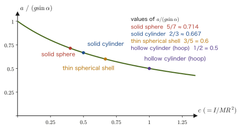

Chapter 10Systems of Particles and Rigid Bodies — Center of Mass, Moment of Inertia, and the Rotational Equation of Motion
In the chapters so far, we have treated every object as a “point with no size”—that is, as a particle (point mass). Once we add up the forces acting on a particle and set up the equation of motion $m\bm{\ddot r}=\bm{F}$, the position $\bm r(t)$ is completely determined. Real objects, however, always have size. When you swing a baseball bat, the bat's center of mass traces a parabola while the bat itself simultaneously spins around. A ball rolling down a slope performs “translation,” moving down the slope, and “rotation,” spinning about itself, at the same time. When a figure skater pulls in the arms, the spin becomes faster—this, too, cannot be explained by the equation of motion of a particle alone.
To describe the motion of an extended body (a system of particles or a rigid body), we need two kinds of equations of motion. One is the equation of motion that a single point representing the whole body—the center of mass—obeys just as if it were a single particle. The other is the equation of motion for rotation, written in terms of a new quantity—the moment of inertia—that expresses “how hard it is for the body to rotate” about that center of mass. In high school physics, too, you will have dealt with moments (the balance of torques, or moments of force) in the “equilibrium of a rigid body,” but there we considered only the case in which the body is at rest. In this chapter, we formulate, as an equation of motion, how a torque causes the angular velocity to change when a body is actually in rotational motion.
In this chapter, we first review the center of mass of a system of particles and its equation of motion, and then give the definition of the moment of inertia. On that basis, we carry out concrete calculations for a rod (about one end and about the center of mass) and for a sphere (in two ways: direct integration in spherical coordinates, and an alternative solution by stacking thin disks). Further, through the rotational equation of motion $N=I\dot\omega$ of a rigid body, conservation of angular momentum, rotational kinetic energy, the parallel-axis and perpendicular-axis theorems, a table of the moments of inertia of typical shapes, and two concrete applications—“rolling without slipping” and the “physical pendulum”—we build up the fundamentals of rigid-body mechanics.
- The definition of the center of mass of a system of particles, and the equation of motion of the center of mass, $M\bm{\ddot r}_{\mathrm{cm}}=\sum\bm F_{\mathrm{ext}}$, which follows from the cancellation of the internal forces
- The definition of the moment of inertia, $I=\sum_i m_ir_i^2=\int r^2\rho\,\dd V$, and concrete calculations for a rod (about an end and about the center of mass) and a sphere (by two methods)
- The parallel-axis theorem $I=I_{\mathrm{cm}}+Md^2$, the perpendicular-axis theorem $I_z=I_x+I_y$, and a table of the moments of inertia of typical shapes
- The rotational equation of motion of a rigid body about a fixed axis, $L=I\omega,\ N=I\dot\omega$, conservation of angular momentum, and the rotational kinetic energy $K_{\mathrm{rot}}=\tfrac12I\omega^2$
- Rolling without slipping (the accelerations of a sphere and a cylinder rolling down an incline), and the derivation of the period of a physical pendulum
Source notes: Yasuhide Mochizuki, Physics Notes: Mechanics, pp. 29–30.
10.1 The Center of Mass of a System of Particles and Its Equation of Motion
As a first step toward treating extended bodies, we begin by regarding a body as “a collection of many particles” (a system of particles). Suppose that particles of mass $m_i\ [\mathrm{kg}]$ and position vector $\bm r_i$, for $i=1,2,\dots,n$, are gathered together (later, if we let the number of particles grow without bound and take the continuum limit, this becomes a “rigid body” just as it is).
Definition 10.1: Center of mass of a system of particles
Let $M=\sum_i m_i$ be the total mass of the system of particles. The point $\bm r_{\mathrm{cm}}$ determined by
\begin{equation} \bm r_{\mathrm{cm}}\equiv\frac{1}{M}\sum_i m_i\bm r_i \label{eq:10-cm-def} \end{equation}is called the center of mass of this system of particles (it is often denoted by attaching the subscript cm). For a continuum (a body in which the mass is distributed continuously), we replace the sum $\sum_i$ by the integral $\int\cdots\dd m$ ($\dd m=\rho\,\dd V$, where $\rho$ is the density, a quantity different from the radius of curvature $\rho$ in Chapter 3) and define
$$ \bm r_{\mathrm{cm}}=\frac{1}{M}\int \bm r\,\dd m=\frac{1}{M}\int_V \bm r\,\rho\,\dd V $$The center of mass is “the average of the positions weighted by mass”; it is a point determined not by the shape of the body itself but by how the mass is distributed (it may lie outside the body—for example, the center of mass of a doughnut-shaped object lies in the hole at the center of the object).
Intuition: The same formula as the balance of a lever
In high school physics, when we considered the balance of a lever, the condition for weights of mass $m_1,m_2$ placed at distances $r_1,r_2$ from the fulcrum to balance was $m_1r_1=m_2r_2$. This is exactly the same content as the defining formula of the center of mass. Take the fulcrum as the origin and place $m_1$ at $x=-r_1$ (the left side) and $m_2$ at $x=+r_2$ (the right side); then Eq. \eqref{eq:10-cm-def} becomes $x_{\mathrm{cm}}=(-m_1r_1+m_2r_2)/(m_1+m_2)$. The statement “the fulcrum is the center of mass” ($x_{\mathrm{cm}}=0$) is equivalent to $m_1r_1=m_2r_2$, which is precisely the lever-balance formula learned in high school. In other words, “the lever balances” means nothing other than “the fulcrum is at the position of the center of mass.” Eq. \eqref{eq:10-cm-def} generalizes this familiar relation to a collection of more than two particles—and even to one that is continuously distributed.
Next, we investigate what equation of motion this center of mass obeys. We split the force acting on particle $i$ into the force $\bm F_i^{\mathrm{ext}}$ received from outside the system of particles (the external force) and the forces $\bm F_{ij}^{\mathrm{int}}$ received from the other particles $j$ that make up the system (the internal forces; the sum is taken over $j\neq i$). (For the distinction between internal and external forces and the law of action and reaction, see Section 2.3; for conservation of momentum for many particles, see Section 2.4.) Newton's equation of motion for particle $i$ (Chapter 2) is
$$ m_i\bm{\ddot r}_i=\bm F_i^{\mathrm{ext}}+\sum_{j\neq i}\bm F_{ij}^{\mathrm{int}} $$We sum this over all the particles $i=1,\dots,n$ contained in the system of particles.
Derivation: Equation of motion of the center of mass
Summing both sides over $i$, we obtain
$$ \sum_i m_i\bm{\ddot r}_i=\sum_i\bm F_i^{\mathrm{ext}}+\sum_i\sum_{j\neq i}\bm F_{ij}^{\mathrm{int}} $$The left-hand side is nothing other than $M\bm{\ddot r}_{\mathrm{cm}}=\sum_i m_i\bm{\ddot r}_i$, obtained by differentiating Eq. \eqref{eq:10-cm-def} twice with respect to time (since $m_i$ is constant, the order of differentiation and summation may be exchanged). The first term on the right-hand side, $\sum_i\bm F_i^{\mathrm{ext}}$, is the total force that the whole system of particles receives from the outside, and we write it as $\bm F_{\mathrm{ext}}\equiv\sum_i\bm F_i^{\mathrm{ext}}$. The problem is the sum of the internal forces in the second term on the right-hand side. Here we use Newton's third law (the law of action and reaction). The force that particle $i$ receives from particle $j$ and the force that particle $j$ receives from particle $i$ are equal in magnitude and opposite in direction, so
$$ \bm F_{ij}^{\mathrm{int}}=-\bm F_{ji}^{\mathrm{int}} $$In the double sum $\sum_i\sum_{j\neq i}\bm F_{ij}^{\mathrm{int}}$, for each pair of particles $\{i,j\}$ the two forces $\bm F_{ij}^{\mathrm{int}}$ (the force that $i$ receives from $j$) and $\bm F_{ji}^{\mathrm{int}}$ (the force that $j$ receives from $i$) each appear once. For example, in the case of two particles the sum is $\bm F_{12}^{\mathrm{int}}+\bm F_{21}^{\mathrm{int}}=\bm 0$. In the general case too, for each pair the sum of the two forces of action and reaction is $\bm 0$, so the total sum is also $\bm 0$:
$$ \sum_i\sum_{j\neq i}\bm F_{ij}^{\mathrm{int}}=\sum_{\{i,j\}}\bigl(\bm F_{ij}^{\mathrm{int}}+\bm F_{ji}^{\mathrm{int}}\bigr)=\bm 0 $$Putting the above together, we find that
\begin{equation} M\bm{\ddot r}_{\mathrm{cm}}=\bm F_{\mathrm{ext}} \label{eq:10-cm-eom} \end{equation}holds.
∎
Theorem 10.1: Equation of motion of the center of mass
The center of mass of a system of particles (or of a rigid body) moves as if it were a single particle in which the whole mass $M$ is concentrated at one point and which receives only the total external force $\bm F_{\mathrm{ext}}$:
$$ M\bm{\ddot r}_{\mathrm{cm}}=\bm F_{\mathrm{ext}}=\sum_i\bm F_i^{\mathrm{ext}} $$However complicated the forces acting inside the system of particles (friction, tension, intermolecular forces, and so on), by the law of action and reaction they have no effect whatsoever on the motion of the center of mass.
Theorem 10.1 is extremely powerful. For example, even if a bat or a rod is tossed into the air and flies while rotating, no matter how complicated the forces acting at the various points inside the bat, if we look at the center of mass alone, it traces a simple parabola as a single particle acted on only by gravity. The phenomenon mentioned at the beginning, “the center of mass of the bat traces a parabola while the bat itself rotates,” is explained precisely by the combination of this theorem and the “rotational equation of motion about the center of mass” that we will see in the sections that follow.
Example 10.1: Center of mass of a two-particle system and its equation of motion
A particle of mass $m_1=2\ \mathrm{kg}$ is at $x_1=0\ \mathrm m$, and a particle of mass $m_2=3\ \mathrm{kg}$ is at $x_2=5\ \mathrm m$ (one dimension, on the $x$ axis). (1) Find the position $x_{\mathrm{cm}}$ of the center of mass of this two-particle system. (2) Further, when an external force of $F_1=4\ \mathrm N$ in the positive $x$ direction acts on particle 1 and an external force of magnitude $6\ \mathrm N$ in the negative $x$ direction (that is, $F_2=-6\ \mathrm N$) acts on particle 2, find the acceleration $\ddot x_{\mathrm{cm}}$ of the center of mass.
Solution. (1) From Eq. \eqref{eq:10-cm-def},
$$ x_{\mathrm{cm}}=\frac{m_1x_1+m_2x_2}{m_1+m_2}=\frac{2\times0+3\times5}{2+3}=\frac{15}{5}=3\ \mathrm m $$(Since $m_2$ is the heavier one, the center of mass lies closer to $m_2$ than the midpoint $2.5\ \mathrm m$—as in Figure 10.1.)
(2) By Theorem 10.1 (Eq. \eqref{eq:10-cm-eom}), the equation of motion of the center of mass is determined only by the total mass $M=m_1+m_2=5\ \mathrm{kg}$ and the total external force $F_{\mathrm{ext}}=F_1+F_2$, and it does not matter what internal forces act between the two particles (for example, if the two particles are connected by a spring):
$$ \ddot x_{\mathrm{cm}}=\frac{F_{\mathrm{ext}}}{M}=\frac{F_1+F_2}{m_1+m_2}=\frac{4+(-6)}{5}=\frac{-2}{5}=-0.4\ \mathrm{m/s^2} $$(Dimension check: $[\mathrm N]/[\mathrm{kg}]=[\mathrm{kg\,m/s^2}]/[\mathrm{kg}]=[\mathrm{m/s^2}]$, which is correct.)
Example 10.2: Center of mass of a rod of nonuniform density
A thin rod of length $\ell$ lies along the $x$ axis over $0\le x\le\ell$. If its linear density (mass per unit length, $\mathrm{kg/m}$) is $\rho(x)=\rho_0\left(1+\dfrac{x}{\ell}\right)$ ($\rho_0$ is a constant), find the position $x_{\mathrm{cm}}$ of the center of mass. Also verify, using the same formula, that the center of mass of a rod of uniform density ($\rho(x)=\rho_0$) is the midpoint $\ell/2$.
Solution. Writing the integral form of the definition of the center of mass of a continuum (Definition 10.1) in one dimension, we have $x_{\mathrm{cm}}=\dfrac{1}{M}\displaystyle\int_0^{\ell}x\,\rho(x)\,\dd x$, since $\dd m=\rho(x)\,\dd x$. First we find the total mass $M$:
$$ M=\int_0^{\ell}\rho_0\left(1+\frac{x}{\ell}\right)\dd x=\rho_0\left[x+\frac{x^2}{2\ell}\right]_0^{\ell}=\rho_0\left(\ell+\frac{\ell}{2}\right)=\frac32\rho_0\ell $$Next, we find the integral weighted by position (the first moment):
$$ \int_0^{\ell}x\,\rho_0\left(1+\frac{x}{\ell}\right)\dd x=\rho_0\int_0^{\ell}\left(x+\frac{x^2}{\ell}\right)\dd x=\rho_0\left[\frac{x^2}{2}+\frac{x^3}{3\ell}\right]_0^{\ell}=\rho_0\left(\frac{\ell^2}{2}+\frac{\ell^2}{3}\right)=\frac56\rho_0\ell^2 $$Therefore,
$$ x_{\mathrm{cm}}=\frac{\frac56\rho_0\ell^2}{\frac32\rho_0\ell}=\frac56\cdot\frac23\,\ell=\frac59\,\ell\approx0.556\,\ell $$The center of mass is thus shifted from the midpoint $\ell/2=0.5\,\ell$ toward the side $x=\ell$, where the density is larger. For the uniform rod ($\rho=\rho_0$), $M=\rho_0\ell$ and $\int_0^{\ell}x\rho_0\,\dd x=\rho_0\ell^2/2$, so $x_{\mathrm{cm}}=\ell/2$, and the center of mass is the midpoint (dimension check: $x_{\mathrm{cm}}$ has the dimension of length).
10.2 Motion of Extended Bodies — Two Equations for Handling Rigid Bodies
The equation of motion of the center of mass, $M\bm{\ddot r}_{\mathrm{cm}}=\bm F_{\mathrm{ext}}$, which we saw in the previous section, tells us only “where” the center of mass of a system of particles is located. However, the motion of a body that has size (a rigid body) is not determined by this alone. We also need to know how the body changes its orientation about the center of mass—its rotation. For a particle, which is a point with no size, the very notion of “spinning” is meaningless, so there was no need to consider rotation; but for a system of particles or a rigid body (which has size), another degree of freedom arises: the motion of each part of the body about the center of mass.
Definition 10.2: Rigid body
An idealized body in which the distance between any two points does not change with time is called a rigid body.
Real bodies deform slightly when they are subjected to a force. However, when the deformation is so small as to be negligible compared with the motion as a whole (for example, when an iron rod is swung gently), the body can be regarded as a rigid body. The position and orientation of a rigid body are determined by the position of its center of mass (three numbers) and its orientation about the center of mass (three numbers). In this chapter we treat only those rotations of a rigid body in which the direction of the axis of rotation does not change—rotation about a fixed axis, and rotation about an axis whose direction does not change, as for a sphere rolling down an incline. (For a general three-dimensional rotation in which the direction of the axis changes, one needs the “inertia tensor,” in which the moment of inertia takes different values depending on the direction; we touch on it briefly in Section 10.8.)
Let us look at this situation in a concrete example. Consider a single uniform sphere rolling down a rough (frictional) incline of inclination angle $\alpha$ (Figure 10.2). Acting on the sphere are the component of gravity along the incline, $Mg\sin\alpha$ (directed down the incline), and the static friction $F_{\mathrm s}$ exerted by the incline (directed up along the incline, in the direction that slows the translation of the center of mass and at the same time makes the sphere rotate). If we consider only the equation of motion of the center of mass of the sphere (Theorem 10.1, the component along the incline), we obtain a single equation:
$$ Ma=Mg\sin\alpha-F_{\mathrm s} $$However, this equation contains two unknowns, $a$ (the acceleration of the center of mass) and $F_{\mathrm s}$ (the magnitude of the static friction), whereas there is only one equation—from this alone we can determine neither $a$ nor $F_{\mathrm s}$. For the sphere to “roll down,” the sphere itself must spin at the same time, so we need one more equation, one that expresses how the rotation of the sphere changes. This situation, in which the equation we can already see (the equation for the translational motion of the center of mass) does not close on its own, is precisely the concrete meaning of the statement that “a body that has size needs both the equation of motion of the center of mass and the rotational equation of motion.”
Intuition: Why is the rotational equation of motion needed independently?
The equation of motion of the center of mass (Eq. \eqref{eq:10-cm-eom}) is determined solely by the simple sum (vector sum) of the forces acting on the body, and the information about where each force acts has been lost. For example, even if we gather both the gravity component $Mg\sin\alpha$ and the frictional force $F_{\mathrm s}$ acting on the sphere of Figure 10.2 at a single point at the center of the sphere, keeping their directions unchanged, we obtain exactly the same equation of motion of the center of mass. In reality, however, the frictional force acts on the surface of the sphere (the contact point), and a force acting at a point displaced from the center has the effect of making the body rotate (the torque, or moment of force). This information about “where the force acts” can be captured only by the rotational equation of motion ($N=I\dot\omega$, which we derive in Section 10.8). The sum of the forces (translation) and the sum of the torques (rotation) are, in general, two independent kinds of information, and both are needed to determine the motion of a rigid body completely.
To set up the rotational equation of motion, we first need a quantity that expresses how much “resistance to rotation” a body has—the moment of inertia. So, starting with the next section, we give the definition of the moment of inertia and carry out calculations for specific shapes (a rod and a sphere). The derivation of the rotational equation of motion itself ($N=I\dot\omega$) is carried out in Section 10.8, once the moment of inertia has been defined, and the incline problem of Figure 10.2 is settled by actually solving it in Section 10.9.
Example 10.3: Components of gravity on a sphere on an incline
As in Figure 10.2, a sphere of mass $M=1\ \mathrm{kg}$ sits on an incline of inclination angle $\alpha=30^\circ$. Resolve the gravitational force $Mg$ ($g=9.8\ \mathrm{m/s^2}$) into a component along the incline and a component perpendicular to the incline, and find the magnitude of each. Also, assuming that the sphere does not accelerate in the direction perpendicular to the incline, find the magnitude $F_{\mathrm N}$ of the normal force that the incline exerts on the sphere.
Solution. Gravity points vertically downward, and the incline is tilted by $\alpha$, so the magnitudes of the component along the incline (directed down the incline) and the component perpendicular to the incline (the direction pressing against the incline) are, respectively,
$$ Mg\sin\alpha=1\times9.8\times\sin30^\circ=9.8\times0.5=4.9\ \mathrm N $$ $$ Mg\cos\alpha=1\times9.8\times\cos30^\circ=9.8\times0.8660\approx8.49\ \mathrm N $$(Check: $\sqrt{4.9^2+8.49^2}=\sqrt{24.0+72.0}\approx9.8\ \mathrm N=Mg$, so the two components recombine to the magnitude of the original gravitational force.) From the equilibrium of forces in the direction perpendicular to the incline, the magnitude of the normal force is $F_{\mathrm N}=Mg\cos\alpha\approx8.49\ \mathrm N$ (in this chapter the symbol $N$ is used for the torque, so we use $F_{\mathrm N}$ for the normal force). How large the frictional force $F_{\mathrm s}$ that the sphere actually experiences will be, compared with the component of gravity along the incline, $4.9\ \mathrm N$, we find in Section 10.9, where the rotational equation of motion becomes available (Example 10.12).
10.3 The Definition of the Moment of Inertia
In the translational motion of a particle (point mass), the quantity that expresses “resistance to being set in motion” was the mass $m$ (in the equation of motion $m\ddot x=F$, for the same force $F$, the larger $m$ is, the smaller the acceleration $\ddot x$ becomes). Rotational motion also has a quantity that plays the same role. It is the moment of inertia.
Let us begin with everyday experience. When you push a heavy door, the feel is entirely different, even with the same force, depending on whether you push very close to the hinge or at the end where the doorknob is. If you push near the hinge, the door does not turn easily. Also, even when two doors have the same mass, the door whose mass is concentrated farther from the hinge is harder to move. How hard something is to rotate depends not only on its mass but also on how far that mass is from the axis of rotation.
Let us see this in equations. When a particle of mass $m_i$ at a distance $r_i$ from the axis of rotation moves in a circle about the axis with angular velocity $\omega\ [\mathrm{rad/s}]$, its speed is $v_i=r_i\omega$ (the formula for circular motion from high school physics). The kinetic energy of this particle is
$$ \frac12m_iv_i^2=\frac12m_i(r_i\omega)^2=\frac12\bigl(m_ir_i^2\bigr)\omega^2 $$and for the whole system (with any number of particles) we have $K=\tfrac12\bigl(\sum_i m_ir_i^2\bigr)\omega^2$. Comparing this with the kinetic energy of translational motion, $\tfrac12mv^2$, we see that the mass $m$ has been replaced by $\sum_i m_ir_i^2$ and the speed $v$ by the angular velocity $\omega$. It is precisely this $\sum_im_ir_i^2$ that plays the role of “mass” in rotation, and we define it as follows (we shall also confirm in Section 10.8 that it leads to the forms $L=I\omega$ and $N=I\dot\omega$).
Definition 10.3: Moment of inertia
Suppose that $n$ particles of masses $m_i$ are distributed about a given axis of rotation, at distances $r_i$ from the axis. We define the moment of inertia $I\ [\mathrm{kg\,m^2}]$ about this axis as
\begin{equation} I=\sum_i m_ir_i^2 \label{eq:10-I-def} \end{equation}For a body over which the mass is distributed continuously (with density $\rho\ [\mathrm{kg/m^3}]$), we replace the sum by an integral:
$$ I=\int r^2\rho\,\dd V $$Note that here $r$ is the distance from the infinitesimal volume element $\dd V$ being integrated to the axis of rotation, not the distance from the origin (the magnitude of the position vector used in Section 10.1). Depending on the shape of the body, the integral is written as follows:
$$ \text{Rod (linear):}\ I=\int_l r^2\rho\,\dd r,\qquad \text{Surface (plate-like):}\ I=\int_S r^2\rho\,\dd S,\qquad \text{Solid (sphere, etc.):}\ I=\int_V r^2\rho\,\dd V $$(Here the region of integration is denoted $l$ for the line along the rod, $S$ for the surface, and $V$ for the interior of the solid; the first of these is not to be confused with the length $\ell$ of the rod. In the rod case, $\rho$ is the linear density $[\mathrm{kg/m}]$; in the surface case, the areal density $[\mathrm{kg/m^2}]$; and in the solid case, the volume density $[\mathrm{kg/m^3}]$—in every case the meaning is the same: “mass per unit length, per unit area, or per unit volume.”)
Intuition: Inertia means “resistance to motion”
Looking at Eq. \eqref{eq:10-I-def}, we see that the moment of inertia is obtained by multiplying the mass $m_i$ of each particle by the square $r_i^2$ of its distance from the axis of rotation and adding up the results. Even for the same mass, the farther from the axis of rotation it is distributed, the more strongly $r_i^2$ takes effect and the larger the moment of inertia becomes—that is, the harder it is to rotate. A figure skater spins faster when the arms are pulled in because, with the mass (the mass of the arms) unchanged, the distance $r$ from the axis of rotation (the central axis of the body) becomes smaller and the moment of inertia $I$ is thereby reduced (we treat the conservation of angular momentum, $L=I\omega=\text{constant}$, in Section 10.8, where we also compute a numerical example for the skater). “Inertia” in general means “the property of tending to keep the present state of motion (unless acted on from outside) = resistance to motion,” and the mass $m$ in translational motion and the moment of inertia $I$ in rotational motion have in common that both quantify this “resistance to motion.”
Example 10.4: Moment of inertia of a discrete system of particles
Three particles are fixed about a certain axis of rotation: one of mass $m_1=1.0\ \mathrm{kg}$ (at $r_1=0.5\ \mathrm m$ from the axis), one of mass $m_2=2.0\ \mathrm{kg}$ (at $r_2=1.0\ \mathrm m$ from the axis), and one of mass $m_3=1.5\ \mathrm{kg}$ (at $r_3=1.5\ \mathrm m$ from the axis). Find the moment of inertia $I$ about this axis.
Solution. By Definition 10.3 (Eq. \eqref{eq:10-I-def}),
$$ I=\sum_{i=1}^{3}m_ir_i^2=1.0\times0.5^2+2.0\times1.0^2+1.5\times1.5^2 $$ $$ =1.0\times0.25+2.0\times1.0+1.5\times2.25=0.25+2.0+3.375=5.625\ \mathrm{kg\,m^2} $$(Although $m_3$, the farthest from the axis, has a smaller mass than $m_2$, its contribution to the moment of inertia ($3.375\ \mathrm{kg\,m^2}$) is larger than the contribution of $m_2$ ($2.0\ \mathrm{kg\,m^2}$), because $r_3^2=2.25$ is larger than $r_2^2=1.0$—we can see clearly that the “distance from the axis” enters squared.)
10.4 Moment of Inertia of a Rod — About an End and about the Center of Mass
Let us apply Definition 10.3 to the simplest case—a uniform thin rod of mass $M$ and length $\ell$. The rod is assumed to be so thin that its thickness is negligible, and the axis of rotation is perpendicular to the rod and intersects it. “Uniform” means that the density (here, the linear density) $\rho$ is the same at every point of the rod, and since the total mass is $M=\rho\ell$, the linear density can be written as
$$ \rho=\frac{M}{\ell}\ \ [\mathrm{kg/m}] $$If we divide the rod, along its length, into small pieces of infinitesimal length $\dd r$, the mass of each piece is $\dd m=\rho\,\dd r$; multiplying this by the square of the distance $r$ from the axis of rotation and integrating over the whole rod gives the moment of inertia $I=\int r^2\rho\,\dd r$ (the formula for the “rod” case in Definition 10.3). Depending on the interval of integration—that is, on where the axis of rotation is fixed—the value of the moment of inertia differs even for the same rod. Here we compute two representative cases (the axis at one end, and the axis at the center of mass).
10.4.1 When one end of the rod is fixed
First, take one end of the rod as the origin $O$ and consider rotation about the axis through it perpendicular to the rod (Figure 10.3). With $r$ the coordinate along the rod ($0\le r\le\ell$), the linear density is uniform, so $\rho=M/\ell$.
Derivation: Moment of inertia of a rod about one end
Substitute $\rho=M/\ell$ (a constant independent of $r$) into the integral of Definition 10.3:
\begin{equation} I=\int_0^{\ell}r^2\cdot\frac{M}{\ell}\,\dd r \label{eq:10-I-end-integral} \end{equation}Since $M/\ell$ is a constant that does not depend on $r$, it can be taken outside the integral. An antiderivative of $r^2$ is $r^3/3$, so
$$ I=\frac{M}{\ell}\left[\frac{1}{3}r^3\right]_0^{\ell}=\frac{M}{\ell}\left(\frac{\ell^3}{3}-0\right)=\frac{M\ell^3}{3\ell} $$Canceling the common factor $\ell$ from the numerator and denominator, we obtain
\begin{equation} I_{\text{end}}=\frac{M\ell^2}{3} \label{eq:10-I-end} \end{equation}This is the result (dimension check: $[\mathrm{kg}][\mathrm m^2]=[\mathrm{kg\,m^2}]$, which agrees with the unit of the moment of inertia).
∎
10.4.2 When the center of mass of the rod is fixed
Next, consider rotating the same rod, this time about the axis through its center of mass (the midpoint of the rod, at the position $\ell/2$) perpendicular to the rod (Figure 10.4). That the center of mass of a uniform rod is its midpoint was confirmed in the last calculation of Example 10.2. If we take the midpoint of the rod as the origin, the interval of integration becomes $-\ell/2\le r\le \ell/2$.
Derivation: Moment of inertia of a rod about its center of mass
Only the interval of integration changes; the integrand is the same as in Section 10.4.1:
\begin{equation} I=\int_{-\frac{\ell}{2}}^{\frac{\ell}{2}}r^2\cdot\frac{M}{\ell}\,\dd r=\frac{M}{\ell}\left[\frac{1}{3}r^3\right]_{-\frac{\ell}{2}}^{\frac{\ell}{2}} \label{eq:10-I-cm-rod-integral} \end{equation}Substituting the upper and lower limits of the definite integral, we have
$$ \frac{M}{\ell}\left(\frac{1}{3}\left(\frac{\ell}{2}\right)^3-\frac{1}{3}\left(-\frac{\ell}{2}\right)^3\right) =\frac{M}{\ell}\left(\frac{\ell^3}{24}+\frac{\ell^3}{24}\right) =\frac{M}{\ell}\cdot\frac{\ell^3}{12}=\frac{M\ell^3}{12\ell} $$Here, since $(-\ell/2)^3=-\ell^3/8$, the lower-limit term $-\tfrac13(-\ell/2)^3$ becomes $+\ell^3/24$ and is added with the same sign as the upper-limit term $\ell^3/24$. This reflects the fact that, because the integrand $r^2$ is an even function ($(-r)^2=r^2$), the integral from $-\ell/2$ to $\ell/2$ is exactly twice the integral from $0$ to $\ell/2$:
$$ \int_{-\ell/2}^{\ell/2}r^2\,\dd r=2\int_0^{\ell/2}r^2\,\dd r=2\cdot\frac13\left(\frac{\ell}{2}\right)^3=\frac{\ell^3}{12} $$Canceling $\ell$, we obtain
\begin{equation} I_{\text{cm}}=\frac{M\ell^2}{12} \label{eq:10-I-cm-rod} \end{equation}This is the result.
∎
Discussion: Which is harder to rotate, about an end or about the center of mass?
Comparing the two results,
$$ I_{\text{end}}=\frac{M\ell^2}{3},\qquad I_{\text{cm}}=\frac{M\ell^2}{12},\qquad \frac{I_{\text{end}}}{I_{\text{cm}}}=4 $$we see that the moment of inertia about the end is as much as four times that about the center of mass. This is a direct manifestation of the statement in Section 10.3 that “the farther from the axis of rotation the mass is distributed, the larger the moment of inertia is”—if one end of the rod is fixed, the other end of the rod (the opposite end) can be as far as $\ell$ from the axis, whereas if the center of mass is fixed, either end of the rod is at most $\ell/2$ from the axis. A large moment of inertia means that, even when the same torque is applied, little angular acceleration is produced—that is, it is harder to rotate (we formulate this relation in Section 10.8 as the rotational equation of motion $N=I\dot\omega$). That a door fixed at its edge feels “heavier” than a revolving door that turns about its center is an everyday manifestation of this difference in moments of inertia. We also note in advance that these two results can be understood in a unified way by the parallel-axis theorem $I_{\text{end}}=I_{\text{cm}}+M(\ell/2)^2$, which we shall learn in Section 10.7.
Example 10.5: Computing the moment of inertia of a rod with concrete numbers
There is a uniform rod of mass $M=2\ \mathrm{kg}$ and length $\ell=1\ \mathrm m$. (1) Find the moment of inertia $I_{\text{end}}$ when one end is fixed. (2) Find the moment of inertia $I_{\text{cm}}$ when the center of mass is fixed, and find the ratio between it and the result of (1).
Solution. (1) By Eq. \eqref{eq:10-I-end},
$$ I_{\text{end}}=\frac{M\ell^2}{3}=\frac{2\times1^2}{3}=\frac{2}{3}\approx0.667\ \mathrm{kg\,m^2} $$(2) By Eq. \eqref{eq:10-I-cm-rod},
$$ I_{\text{cm}}=\frac{M\ell^2}{12}=\frac{2\times1^2}{12}=\frac{1}{6}\approx0.167\ \mathrm{kg\,m^2} $$The ratio is $I_{\text{end}}/I_{\text{cm}}=(2/3)/(1/6)=4$, and, as in the earlier discussion, the moment of inertia about the end is exactly four times that about the center of mass.
10.5 Moment of Inertia of a Sphere (I) — Calculation in Spherical Coordinates
Next we find the moment of inertia of a sphere with a uniform mass distribution (radius $R\ [\mathrm m]$, mass $M$) about an axis through its center. This calculation is much more involved than the one for the rod, and it turns out to be the integral that requires the most computation in the whole of this chapter (it involves a triple integral, a change of variables to spherical coordinates, and trigonometric identities). Because we make full use of the multiple integrals, changes of variables, and spherical coordinates studied in University Mathematics (AD 02), Chapter 7, we recommend that you read on while consulting Section 7.3 (Jacobian) and Section 7.7 (the volume and surface area of a sphere) as needed.
Since the sphere has a uniform density, the density $\rho\ [\mathrm{kg/m^3}]$ is the constant obtained by dividing the total mass $M$ by the volume of the sphere, $\tfrac43\pi R^3$:
$$ \rho=\frac{M}{\frac{4}{3}\pi R^3} $$Caution: “$r$” has two meanings
The $r$ in the definition of the moment of inertia, $I=\int r^2\rho\,\dd V$, was the distance from the axis of rotation. However, the $r$ in the spherical coordinates $(r,\theta,\varphi)$ that follow is the distance from the origin (the center of the sphere). Since these two are entirely different quantities, in this section we write the distance from the axis of rotation as $r_\perp$ (the subscript means “perpendicular distance”) to distinguish it from the radial coordinate $r$ of the spherical coordinates.
We take the axis of rotation to be the $z$ axis. The volume integral in Definition 10.3 can be written as $I=\int_V r_\perp^2\rho\,\dd V$. In rectangular coordinates $(x,y,z)$, the distance from the $z$ axis is $r_\perp=\sqrt{x^2+y^2}$, so its square is $r_\perp^2=x^2+y^2$ (not the distance from the origin, $\sqrt{x^2+y^2+z^2}$). Therefore, we can write
\begin{equation} I=\iiint_V r_\perp^2\rho\,\dd V=\iiint_V \rho\,\underline{\underline{(x^2+y^2)}}\,\dd x\,\dd y\,\dd z \label{eq:10-I-sphere-setup} \end{equation}(the underlined part $x^2+y^2$ is the square of the distance from the $z$ axis). Note that the part $\dd x\,\dd y\,\dd z$ of this expression is the part that, when we change coordinates next, will be replaced (it is the target of the replacement) by a volume element of a different form, $\dd V=|J|\,\dd r\,\dd\theta\,\dd\varphi$.
10.5.1 Change of variables to spherical coordinates
If we try to carry out this integral in rectangular coordinates as it stands, the range of integration expressing the boundary of the sphere ($x^2+y^2+z^2\le R^2$) becomes complicated and hard to handle. We therefore change variables to spherical coordinates $(r,\theta,\varphi)$, which are suited to integrals over spherically symmetric regions (the same transformation as the one studied in University Mathematics (AD 02), Section 7.7):
$$ \begin{cases} x=r\sin\theta\cos\varphi\\ y=r\sin\theta\sin\varphi\\ z=r\cos\theta \end{cases} \qquad 0\le r\le R,\ \ 0\le\theta\le\pi,\ \ 0\le\varphi\le2\pi $$Here $r$ is the distance from the origin (the center of the sphere), $\theta$ is the tilt angle from the $z$ axis (analogous to latitude; the zenith angle), and $\varphi$ is the azimuthal angle in the $xy$ plane (Figure 10.5). The length of the perpendicular dropped from the point $\mathrm P$ in the figure to the $z$ axis, that is, the distance from the $z$ axis, is $r\sin\theta$ (the length of the projection of the segment of length $r$ onto the direction perpendicular to the $z$ axis).
When we change variables from $(x,y,z)$ to $(r,\theta,\varphi)$, the volume element $\dd x\,\dd y\,\dd z$ cannot be used in its original form; it must be replaced by $\dd V=|J|\,\dd r\,\dd\theta\,\dd\varphi$, which includes the Jacobian $|J|$ as a multiplying factor (University Mathematics (AD 02), Section 7.3). The Jacobian is defined as the determinant of the Jacobian matrix of the transformation (the matrix whose entries are the partial derivatives of each coordinate):
\begin{equation} |J|=\begin{vmatrix} \pdiff{x}{r} & \pdiff{x}{\theta} & \pdiff{x}{\varphi}\\[2pt] \pdiff{y}{r} & \pdiff{y}{\theta} & \pdiff{y}{\varphi}\\[2pt] \pdiff{z}{r} & \pdiff{z}{\theta} & \pdiff{z}{\varphi} \end{vmatrix} \label{eq:10-jacobian} \end{equation}We now compute each partial derivative. Differentiating $x=r\sin\theta\cos\varphi$ partially with respect to $r,\theta,\varphi$ gives $\sin\theta\cos\varphi,\ r\cos\theta\cos\varphi,\ -r\sin\theta\sin\varphi$. From $y=r\sin\theta\sin\varphi$ we get $\sin\theta\sin\varphi,\ r\cos\theta\sin\varphi,\ r\sin\theta\cos\varphi$, and from $z=r\cos\theta$ we get $\cos\theta,\ -r\sin\theta,\ 0$. Arranging these in a matrix, we have
$$ |J|=\begin{vmatrix} \sin\theta\cos\varphi & r\cos\theta\cos\varphi & -r\sin\theta\sin\varphi\\ \sin\theta\sin\varphi & r\cos\theta\sin\varphi & r\sin\theta\cos\varphi\\ \cos\theta & -r\sin\theta & 0 \end{vmatrix} $$We expand by cofactors along the third row (the third row contains a 0, so the computation is easy). The minor multiplying the entry $\cos\theta$ in the third row, first column is $(r\cos\theta\cos\varphi)(r\sin\theta\cos\varphi)-(-r\sin\theta\sin\varphi)(r\cos\theta\sin\varphi)=r^2\sin\theta\cos\theta(\cos^2\varphi+\sin^2\varphi)=r^2\sin\theta\cos\theta$. The minor multiplying the entry $-r\sin\theta$ in the third row, second column is $(\sin\theta\cos\varphi)(r\sin\theta\cos\varphi)-(-r\sin\theta\sin\varphi)(\sin\theta\sin\varphi)=r\sin^2\theta$, and its sign is $(-1)^{3+2}=-1$. Therefore,
$$ |J|=\cos\theta\cdot r^2\sin\theta\cos\theta-(-r\sin\theta)\cdot r\sin^2\theta=r^2\sin\theta\,(\cos^2\theta+\sin^2\theta)=r^2\sin\theta $$Hence the volume element is $\dd V=r^2\sin\theta\,\dd r\,\dd\theta\,\dd\varphi$.
Intuition: The meaning of $r^2\sin\theta$
The volume element $\dd V=r^2\sin\theta\,\dd r\,\dd\theta\,\dd\varphi$ can also be understood geometrically. Near the point $\mathrm P$, if we move $r$ by $\dd r$, $\theta$ by $\dd\theta$, and $\varphi$ by $\dd\varphi$, we obtain a small box. The lengths of its three edges are $\dd r$ in the radial direction, $r\,\dd\theta$ in the $\theta$ direction (an arc of a circle of radius $r$), and $r\sin\theta\,\dd\varphi$ in the $\varphi$ direction (an arc of a circle of radius $r\sin\theta$ about the $z$ axis). Since the three edges are mutually perpendicular, the volume is the product $\dd r\cdot r\,\dd\theta\cdot r\sin\theta\,\dd\varphi=r^2\sin\theta\,\dd r\,\dd\theta\,\dd\varphi$, which agrees with the result of the Jacobian calculation.
10.5.2 Carrying out the integration
Derivation: Moment of inertia of a sphere (spherical coordinates)
In spherical coordinates, the square of the distance from the $z$ axis is $r_\perp^2=x^2+y^2=(r\sin\theta\cos\varphi)^2+(r\sin\theta\sin\varphi)^2=r^2\sin^2\theta(\cos^2\varphi+\sin^2\varphi)=r^2\sin^2\theta$ (we used $\cos^2\varphi+\sin^2\varphi=1$). Substituting this into Eq. \eqref{eq:10-I-sphere-setup} and replacing the volume element by the one in spherical coordinates, we obtain
\begin{equation} I=\int_0^{2\pi}\!\!\int_0^{\pi}\!\!\int_0^{R}\rho\cdot\underline{\underline{r^2\sin^2\theta}}\cdot\underline{r^2\sin\theta}\,\dd r\,\dd\theta\,\dd\varphi \label{eq:10-I-sphere-integral} \end{equation}(the double underline marks “the square of the distance from the $z$ axis,” and the single underline marks the volume element that comes from the Jacobian). Rearranging the integrand gives $\rho\,r^4\sin^3\theta$, which is a product of functions, one for each of $r,\theta,\varphi$ ($\rho$ is a constant), so the triple integral can be factored into a product of three single-variable integrals.
First, integrate with respect to $r$. Since an antiderivative of $r^4$ is $r^5/5$,
$$ \int_0^{R}r^4\,\dd r=\left[\frac{r^5}{5}\right]_0^{R}=\frac{R^5}{5} $$Using this, Eq. \eqref{eq:10-I-sphere-integral} simplifies to
$$ I=\frac{R^5}{5}\rho\int_0^{\pi}\sin^3\theta\,\dd\theta\int_0^{2\pi}\dd\varphi $$This is the simplified form up to this point.
Next, integrate with respect to $\theta$. Integrating $\sin^3\theta$ directly requires some ingenuity. Here we solve the triple-angle formula $\sin3\theta=3\sin\theta-4\sin^3\theta$ for $\sin^3\theta$ and rewrite it as a sum of terms in which $\sin$ appears only to the first power:
$$ \sin^3\theta=\frac{1}{4}\bigl(3\sin\theta-\sin3\theta\bigr) $$(How to verify: solving $\sin3\theta=3\sin\theta-4\sin^3\theta$ for $\sin^3\theta$ gives $\sin^3\theta=\tfrac14(3\sin\theta-\sin3\theta)$.) Using this,
$$ \int_0^{\pi}\sin^3\theta\,\dd\theta=\frac14\int_0^{\pi}\bigl(3\sin\theta-\sin3\theta\bigr)\,\dd\theta =\frac14\left[-3\cos\theta+\frac13\cos3\theta\right]_0^{\pi} $$Substituting $\cos\pi=-1,\ \cos3\pi=-1$ at $\theta=\pi$ and $\cos0=1,\ \cos0=1$ at $\theta=0$, we obtain
$$ =\frac14\left[\left(3+\left(-\frac13\right)\right)-\left(-3+\frac13\right)\right] =\frac14\left(\frac{8}{3}+\frac{8}{3}\right)=\frac14\cdot\frac{16}{3}=\frac{4}{3} $$Hence $\displaystyle\int_0^{\pi}\sin^3\theta\,\dd\theta=\frac43$. (Another calculation: write $\sin^3\theta=(1-\cos^2\theta)\sin\theta$ and let $u=\cos\theta$. Then $\dd u=-\sin\theta\,\dd\theta$, and the interval of integration $\theta:0\to\pi$ becomes $u:1\to-1$, so $\displaystyle\int_0^{\pi}\sin^3\theta\,\dd\theta=\int_{-1}^{1}(1-u^2)\,\dd u=\left[u-\frac{u^3}{3}\right]_{-1}^{1}=\frac43$, which agrees.)
Finally, integrate with respect to $\varphi$. The integrand is the constant 1, so the integral is
$$ \int_0^{2\pi}\dd\varphi=2\pi $$Multiplying together the three results above, $\dfrac{R^5}{5}$, $\dfrac43$, and $2\pi$, gives
\begin{equation} I=\frac{R^5}{5}\rho\cdot\frac43\cdot2\pi=\frac{8}{15}\pi\rho R^5 \label{eq:10-I-sphere-unreduced} \end{equation}Finally, we substitute the density $\rho=M\big/\tfrac43\pi R^3$:
$$ I=\frac{8}{15}\pi R^5\cdot\frac{3M}{4\pi R^3} $$We simplify the numerator and the denominator separately. The $\pi$ cancels between numerator and denominator, $R^5/R^3=R^2$, and the coefficient is $\dfrac{8}{15}\times\dfrac{3}{4}=\dfrac{24}{60}=\dfrac25$, so
\begin{equation} I_{\text{sphere}}=\frac{2}{5}MR^2 \label{eq:10-I-sphere-result} \end{equation}is obtained.
∎
Theorem 10.2: Moment of inertia of a uniform sphere about an axis through its center
The moment of inertia of a uniform sphere of mass $M$ and radius $R$ about any axis through its center is
$$ I=\frac{2}{5}MR^2 $$(Because a sphere is perfectly symmetric, the axis may point in any direction.)
Example 10.6: Numerical calculation of the moment of inertia of a sphere
Find the moment of inertia of a uniform sphere of mass $M=5\ \mathrm{kg}$ and radius $R=0.2\ \mathrm m$ about an axis through its center.
Solution. By Theorem 10.2 (Eq. \eqref{eq:10-I-sphere-result}),
$$ I=\frac{2}{5}MR^2=\frac{2}{5}\times5\times0.2^2=2\times0.04=0.08\ \mathrm{kg\,m^2} $$(Dimension check: $[\mathrm{kg}]\times[\mathrm m^2]=[\mathrm{kg\,m^2}]$, which agrees with the unit of the moment of inertia.)
10.6 Moment of Inertia of a Sphere (II) — An Alternative Solution by Stacking Thin Disks
In Section 10.5 we carried out a triple integral using spherical coordinates. Confirming the same result, $I=\tfrac25MR^2$, by a different method is worthwhile both as a check on the calculation and for deepening our understanding of the moment of inertia. In this section, therefore, we derive the same result by a method different from that of Section 10.5, regarding the sphere as “a stack of thin disks.”
Consider slicing a uniform sphere of radius $R$ and mass $M$ into thin disks of thickness $\dd z$ perpendicular to the axis of rotation (the $z$ axis), as shown in Figure 10.6. From the equation of the sphere, $x^2+y^2+z^2=R^2$, the radius $r(z)$ of the disk at height $z$ ($-R\le z\le R$) from the center is
$$ r(z)=\sqrt{R^2-z^2} $$(See the right triangle in the figure: $R^2=z^2+r(z)^2$.) Since the sphere has the uniform density $\rho_0=M\big/\tfrac43\pi R^3$, the mass of the disk of thickness $\dd z$ at height $z$ is the volume of the disk, $\pi r(z)^2\,\dd z$, multiplied by the density:
$$ \dd m=\rho_0\,\pi\,r(z)^2\,\dd z $$This is the mass of a single thin disk.
Derivation: Moment of inertia of a uniform disk about its central axis
To use this method, we first need the result that “the moment of inertia of a uniform disk about the axis through its center perpendicular to its plane is $\tfrac12mr^2$ ($m$ is the mass of the disk and $r$ is its radius).” It suffices to divide the disk into thin rings of radius $r'$ ($0\le r'\le r$) and width $\dd r'$ (the surface density is $\sigma=m/(\pi r^2)$ and the area of a ring is $2\pi r'\,\dd r'$) and integrate according to Definition 10.3:
$$ I_{\text{disk}}=\int_0^{r}(r')^2\cdot\sigma\cdot2\pi r'\,\dd r'=2\pi\sigma\int_0^{r}(r')^3\,\dd r'=2\pi\sigma\left[\frac{(r')^4}{4}\right]_0^{r}=2\pi\sigma\cdot\frac{r^4}{4}=\frac{\pi\sigma r^4}{2} $$Substituting $\sigma=m/(\pi r^2)$ here gives $I_{\text{disk}}=\dfrac{\pi r^4}{2}\cdot\dfrac{m}{\pi r^2}=\dfrac12mr^2$. This is a basic result that also appears later in the table of moments of inertia of typical shapes in Section 10.7.
∎
Derivation: Moment of inertia of a sphere by superposing disks
The thin disk of thickness $\dd z$ at height $z$ (mass $\dd m$, radius $r(z)$) is itself a “uniform disk,” so by the result in the box above, its contribution to the moment of inertia about the $z$ axis is
$$ \dd I=\frac12\,\dd m\,r(z)^2=\frac12\,\rho_0\,\pi\,r(z)^2\,\dd z\cdot r(z)^2=\frac{\pi\rho_0}{2}\,r(z)^4\,\dd z $$The moment of inertia of the whole sphere is obtained by integrating (superposing) this from $z=-R$ to $z=R$:
$$ I=\int_{-R}^{R}\frac{\pi\rho_0}{2}\,r(z)^4\,\dd z=\frac{\pi\rho_0}{2}\int_{-R}^{R}\bigl(R^2-z^2\bigr)^2\,\dd z $$(Since $r(z)^2=R^2-z^2$, we have set $r(z)^4=(R^2-z^2)^2$.) Expanding the integrand gives $(R^2-z^2)^2=R^4-2R^2z^2+z^4$, so we integrate term by term:
$$ \int_{-R}^{R}\bigl(R^4-2R^2z^2+z^4\bigr)\,\dd z =\left[R^4z-\frac{2R^2}{3}z^3+\frac{z^5}{5}\right]_{-R}^{R} $$We substitute $z=R$ and $z=-R$ and take the difference (the integrand is an even function of $z$, so the result is twice the integral from $0$ to $R$):
$$ =2\left(R^4\cdot R-\frac{2R^2}{3}\cdot R^3+\frac{R^5}{5}\right) =2R^5\left(1-\frac23+\frac15\right) $$We combine the terms inside the parentheses over a common denominator ($1=\tfrac{15}{15},\ \tfrac23=\tfrac{10}{15},\ \tfrac15=\tfrac{3}{15}$):
$$ 1-\frac23+\frac15=\frac{15-10+3}{15}=\frac{8}{15} $$Therefore,
$$ \int_{-R}^{R}\bigl(R^2-z^2\bigr)^2\,\dd z=2R^5\cdot\frac{8}{15}=\frac{16}{15}R^5 $$Substituting this back into the expression for $I$, we obtain
\begin{equation} I=\frac{\pi\rho_0}{2}\cdot\frac{16}{15}R^5=\frac{8\pi\rho_0}{15}R^5 \label{eq:10-I-sphere-disks} \end{equation}Finally, substituting $\rho_0=M\big/\tfrac43\pi R^3$ gives
$$ I=\frac{8\pi}{15}R^5\cdot\frac{3M}{4\pi R^3}=\frac{8}{15}\times\frac34\times MR^2=\frac{2}{5}MR^2 $$and we obtain exactly the same result as in Section 10.5 (Eq. \eqref{eq:10-I-sphere-result}), namely $I=\tfrac25MR^2$.
∎
Example 10.7: Moment of inertia of a thin spherical shell
Find the moment of inertia, about an axis through the center, of a thin spherical shell of mass $M$ and radius $R$ whose mass is distributed uniformly over the surface only (a hollow sphere of negligible thickness, such as a ping-pong ball). Furthermore, for a thin spherical shell of mass $M=3\ \mathrm{kg}$ and radius $R=0.15\ \mathrm m$, find the numerical value of the moment of inertia and compare it with that of a solid sphere with the same $M,R$ (Theorem 10.2).
Solution. Since the shell has mass only on its surface, we replace the volume integral of Section 10.5 by a surface integral over the surface $r=R$. The surface density is $\sigma=M/(4\pi R^2)$ (we divide by the surface area $4\pi R^2$ of the sphere). The area element on the sphere is the area of the small rectangle obtained in spherical coordinates by fixing $r=R$ and varying $\theta$ and $\varphi$ (with side lengths $R\,\dd\theta$ and $R\sin\theta\,\dd\varphi$), so $\dd S=R^2\sin\theta\,\dd\theta\,\dd\varphi$. Since the square of the distance from the $z$ axis is $R^2\sin^2\theta$,
$$ I_{\text{shell}}=\int_0^{2\pi}\!\!\int_0^{\pi}\sigma\,R^2\sin^2\theta\cdot R^2\sin\theta\,\dd\theta\,\dd\varphi=\sigma R^4\int_0^{\pi}\sin^3\theta\,\dd\theta\int_0^{2\pi}\dd\varphi $$Using $\int_0^{\pi}\sin^3\theta\,\dd\theta=\tfrac43$ and $\int_0^{2\pi}\dd\varphi=2\pi$, which we found in Section 10.5, we get $I_{\text{shell}}=\sigma R^4\cdot\tfrac43\cdot2\pi=\tfrac{8\pi}{3}\sigma R^4$. Substituting $\sigma=M/(4\pi R^2)$ gives
$$ I_{\text{shell}}=\frac{8\pi}{3}\cdot\frac{M}{4\pi R^2}\cdot R^4=\frac23MR^2 $$(Check: Differentiating the formula for the solid sphere, $I(R)=\tfrac{8\pi}{15}\rho R^5$, with respect to $R$ gives $\dd I=\tfrac{8\pi}{3}\rho R^4\,\dd R$. This agrees exactly with the contribution of the thin spherical shell between radii $R$ and $R+\dd R$ (mass $\dd M=4\pi R^2\rho\,\dd R$), $\tfrac23R^2\,\dd M=\tfrac{8\pi}{3}\rho R^4\,\dd R$. A solid sphere is also a stack of spherical shells.)
Substituting the numerical values,
$$ I_{\text{shell}}=\frac23MR^2=\frac23\times3\times0.15^2=2\times0.0225=0.045\ \mathrm{kg\,m^2} $$For a solid sphere with the same $M,R$, Theorem 10.2 gives $I_{\text{solid}}=\tfrac25MR^2=\tfrac25\times3\times0.0225=0.027\ \mathrm{kg\,m^2}$. The ratio is
$$ \frac{I_{\text{shell}}}{I_{\text{solid}}}=\frac{2/3}{2/5}=\frac53\approx1.67 $$Even with the same mass and radius, then, the spherical shell, in which all the mass is concentrated on the surface of the sphere (the place farthest from the axis), has a larger moment of inertia (is harder to rotate) than the solid sphere, in which part of the mass is also distributed near the axis—this too is a manifestation of the fact that “the distance from the axis enters as a square.” (In the shell's $I=cMR^2$, the coefficient $c=2/3$ will also be used in Section 10.9 when we find the acceleration of rolling motion.)
10.7 The Parallel-Axis and Perpendicular-Axis Theorems and Moments of Inertia of Typical Shapes
In Section 10.4 we saw that, even for the same rod, the moment of inertia differs by a factor of four depending on whether the axis of rotation is taken at the “end” or at the “center of mass.” Redoing the integral of Definition 10.3 from scratch every time is inefficient. In fact, if we know the moment of inertia about an axis through the center of mass, we can find the moment of inertia about any axis parallel to it without redoing the integral—this is the parallel-axis theorem.
10.7.1 Parallel-axis theorem (Steiner's theorem)
Theorem 10.3: Parallel-axis theorem (Steiner's theorem)
Let $I_{\mathrm{cm}}$ be the moment of inertia of a rigid body of mass $M$ about an axis through its center of mass. The moment of inertia $I$ about another axis that is parallel to this axis and at a distance $d$ from it is
\begin{equation} I=I_{\mathrm{cm}}+Md^2 \label{eq:10-parallel-axis} \end{equation}This is the parallel-axis theorem (Steiner's theorem).
Derivation: Proof of the parallel-axis theorem
The moment of inertia about an axis is determined solely by the perpendicular distance of each particle from the axis. We therefore project each particle onto a plane perpendicular to the axis (the position along the direction parallel to the axis does not affect the moment of inertia) and work in this plane. Take as the origin the point where the axis through the center of mass meets this plane (the projection of the center of mass), and let $\bm s_i'$ be the position vector of particle $i$ within this plane ($|\bm s_i'|$ is the distance from the center-of-mass axis, corresponding to the $r_i$ used up through Section 10.4). By the definition of the center of mass (Eq. \eqref{eq:10-cm-def} written for the coordinates in this plane), we have
$$ \sum_i m_i\bm s_i'=\bm 0 $$(this is only natural, since we chose the origin at the center of mass). Now consider a new parallel axis that is displaced from the axis through the center of mass, within the same plane, by a constant vector $\bm d$ (of magnitude $d$) (Figure 10.7). The position vector from this new axis to particle $i$ is $\bm s_i'-\bm d$, so by Definition 10.3 the moment of inertia about the new axis is
$$ I=\sum_i m_i\,\bigl|\bm s_i'-\bm d\bigr|^2 $$Expanding this with the property of the inner product of vectors, $|\bm a-\bm b|^2=|\bm a|^2-2\bm a\cdot\bm b+|\bm b|^2$ (an expansion formula that follows from the definition of the inner product in University Mathematics, Section 15.2), we obtain
$$ I=\sum_i m_i\Bigl(|\bm s_i'|^2-2\bm s_i'\cdot\bm d+|\bm d|^2\Bigr) =\sum_i m_i|\bm s_i'|^2-2\bm d\cdot\sum_i m_i\bm s_i'+d^2\sum_i m_i $$(since $\bm d$ is a constant vector common to all the particles, it was taken outside the sum). The first term on the right-hand side, $\sum_i m_i|\bm s_i'|^2$, is by Definition 10.3 exactly $I_{\mathrm{cm}}$ (the moment of inertia about the axis through the center of mass). The second term contains $\sum_i m_i\bm s_i'$, which is $\bm 0$ by the definition of the center of mass, as stated above, so this whole term vanishes. In the third term, $\sum_i m_i=M$ (the total mass). Therefore,
$$ I=I_{\mathrm{cm}}-2\bm d\cdot\bm 0+Md^2=I_{\mathrm{cm}}+Md^2 $$follows.
∎
Discussion: Consistency with the results of Section 10.4
Consider the two moments of inertia of the rod found in Section 10.4, $I_{\mathrm{cm}}=M\ell^2/12$ (about the center of mass) and $I_{\text{end}}=M\ell^2/3$ (about an end). The end is at a distance $d=\ell/2$ from the center of mass, so the parallel-axis theorem (Eq. \eqref{eq:10-parallel-axis}) gives
$$ I_{\text{end}}\overset{?}{=}I_{\mathrm{cm}}+M\left(\frac{\ell}{2}\right)^2=\frac{M\ell^2}{12}+\frac{M\ell^2}{4}=\frac{M\ell^2}{12}+\frac{3M\ell^2}{12}=\frac{4M\ell^2}{12}=\frac{M\ell^2}{3} $$which indeed agrees exactly with $I_{\text{end}}=M\ell^2/3$ obtained by direct integration in Section 10.4.1. With the parallel-axis theorem, the value about the end follows immediately from the result $I_{\mathrm{cm}}$ of Section 10.4.2 and Theorem 10.3 alone, without redoing the integral of Section 10.4.1 (Eq. \eqref{eq:10-I-end-integral}).
10.7.2 Perpendicular-axis theorem
There is one more convenient theorem that holds only for thin, flat bodies (bodies that have area but whose thickness is negligible, called “plane plates” or “thin plates”). Suppose a thin plate lies in the $xy$ plane. Let $I_x,I_y$ be the moments of inertia about the $x$ axis and the $y$ axis, respectively, and let $I_z$ be the moment of inertia about the $z$ axis perpendicular to the plate (passing through the intersection of the $x,y$ axes).
Theorem 10.4: Perpendicular-axis theorem
For a thin plate lying in the $xy$ plane, the moments of inertia about two perpendicular axes in the plane of the plate (the $x$ axis and the $y$ axis) and about the axis through their intersection perpendicular to the plate (the $z$ axis) are related by
\begin{equation} I_z=I_x+I_y \label{eq:10-perp-axis} \end{equation}This is the perpendicular-axis theorem.
Derivation: Proof of the perpendicular-axis theorem
Let the coordinates of particle $i$ on the thin plate (in the $xy$ plane) be $(x_i,y_i,0)$. Its distance from the $x$ axis is $y_i$ (since its coordinate in the direction perpendicular to the $x$ axis is $y_i$), its distance from the $y$ axis is $x_i$, and its distance from the $z$ axis (through the origin, perpendicular to the plate) is the distance from the origin to $(x_i,y_i)$, namely $\sqrt{x_i^2+y_i^2}$. Therefore, by Definition 10.3,
$$ I_x=\sum_i m_iy_i^2,\qquad I_y=\sum_i m_ix_i^2,\qquad I_z=\sum_i m_i\bigl(x_i^2+y_i^2\bigr) $$Splitting the expression for $I_z$ inside the sum into a term in $x_i^2$ and a term in $y_i^2$, we get $I_z=\sum_i m_ix_i^2+\sum_i m_iy_i^2=I_y+I_x$, which proves Eq. \eqref{eq:10-perp-axis} (we have used in an essential way that the body is a thin plate, that is, that all the mass lies in the plane $z=0$—this theorem does not hold for a solid with thickness).
∎
The perpendicular-axis theorem is especially powerful for thin plates with a high degree of symmetry, such as disks and rings. For example, for a uniform disk (the moment of inertia about the central axis is $I_z=\tfrac12MR^2$, as shown in the derivation for the disk in Section 10.6), symmetry makes the moment of inertia about a diameter the same for every direction, $I_x=I_y$. Hence, by Eq. \eqref{eq:10-perp-axis}, $I_z=2I_x$, that is, $I_x=I_z/2=\tfrac14MR^2$, which is obtained without redoing any integral.
10.7.3 List of moments of inertia of typical shapes
The results obtained so far, together with those obtained by combining the perpendicular-axis theorem and the parallel-axis theorem, are collected in Table 10.1 and Figure 10.8 (in every case the rigid body has uniform density and mass $M$). A ring (also called a hoop) can be regarded as having all of its mass at a single radius $R$ (the distance from the axis is $R$ everywhere), so substituting $r=R$ (a constant) directly into Definition 10.3 gives $I=\sum_im_iR^2=R^2\sum_im_i=MR^2$, with no need to integrate. For a cylinder (about its central axis), if we regard the cylinder as a stack of thin disks, the moment of inertia of each disk is $\dd I=\tfrac12\,\dd m\,R^2$, and summing over all of them ($\int\dd m=M$) gives $I=\tfrac12MR^2$, the same value as for a disk, regardless of the length of the cylinder. For a rectangular plate, take the direction of side $a$ as $x$ and the direction of side $b$ as $y$. About the $y$ axis through the center of mass, $I_y=\int x^2\,\dd m=\tfrac1{12}Ma^2$ (the same calculation as the result $\tfrac1{12}M\ell^2$ for a rod about its center of mass), and about the $x$ axis, $I_x=\tfrac1{12}Mb^2$; hence, by the perpendicular-axis theorem, about the central axis perpendicular to the plate $I_z=\tfrac1{12}M(a^2+b^2)$. The moment of inertia of a cylinder (of length $h$) about a diameter is obtained by adding $\dd m\,z^2$, by the parallel-axis theorem, to the moment of inertia $\tfrac14\,\dd m\,R^2$ about a diameter of a single disk (located at height $z$ from the center of mass), and integrating over $-h/2\le z\le h/2$ (Exercise 10.3).
| Shape | Axis of rotation | Moment of inertia $I\ [\mathrm{kg\,m^2}]$ | Remarks |
|---|---|---|---|
| Thin rod (length $\ell$) | Through one end, perpendicular to the rod | $\dfrac13M\ell^2$ | Section 10.4.1 |
| Thin rod (length $\ell$) | Through the center of mass, perpendicular to the rod | $\dfrac{1}{12}M\ell^2$ | Section 10.4.2 |
| Thin ring, circular ring (radius $R$) | Central axis (perpendicular to the plane) | $MR^2$ | All the mass is at distance $R$ from the axis |
| Thin ring, circular ring (radius $R$) | Diameter | $\dfrac12MR^2$ | Perpendicular-axis theorem ($I_x=I_z/2$) |
| Hollow cylinder (inner radius $R_1$, outer radius $R_2$) | Central axis | $\dfrac12M(R_1^2+R_2^2)$ | Subtract the inner disk from the outer thin disk |
| Uniform disk, cylinder (radius $R$) | Central axis (perpendicular to the face of the disk or cylinder) | $\dfrac12MR^2$ | Derivation for the disk in Section 10.6 |
| Uniform disk (radius $R$) | Diameter | $\dfrac14MR^2$ | Perpendicular-axis theorem |
| Cylinder (radius $R$, length $h$) | Through the center, perpendicular to the axis (diameter) | $\dfrac14MR^2+\dfrac1{12}Mh^2$ | Superposition of disks + parallel-axis theorem (Exercise 10.3) |
| Rectangular thin plate (sides $a,b$) | Through the center, perpendicular to the plate | $\dfrac1{12}M(a^2+b^2)$ | Perpendicular-axis theorem |
| Uniform solid sphere (radius $R$) | Any axis through the center | $\dfrac25MR^2$ | Sections 10.5 and 10.6 (Theorem 10.2) |
| Thin spherical shell (radius $R$) | Any axis through the center | $\dfrac23MR^2$ | Example 10.7 |
Example 10.8: Checking the perpendicular-axis theorem
A uniform disk has mass $M=4\ \mathrm{kg}$ and radius $R=0.3\ \mathrm m$. (1) Find the moment of inertia $I_z$ about the central axis. (2) Using the perpendicular-axis theorem, find the moment of inertia $I_x$ about a diameter.
Solution. (1) From Table 10.1 (or the derivation for the disk in Section 10.6),
$$ I_z=\frac12MR^2=\frac12\times4\times0.3^2=2\times0.09=0.18\ \mathrm{kg\,m^2} $$(2) The disk is rotationally symmetric about the $z$ axis, so the moment of inertia is the same for a diameter in any direction, and $I_x=I_y$. By the perpendicular-axis theorem (Eq. \eqref{eq:10-perp-axis}), $I_z=I_x+I_y=2I_x$, so
$$ I_x=\frac{I_z}{2}=\frac{0.18}{2}=0.09\ \mathrm{kg\,m^2} $$(This also agrees with $I_x=\tfrac14MR^2=\tfrac14\times4\times0.09=0.09\ \mathrm{kg\,m^2}$ from Table 10.1. We have also confirmed numerically that it agrees with the value obtained by directly evaluating the double integral about a diameter.)
10.8 Angular Momentum of a Rigid Body, the Rotational Equation of Motion, and Rotational Kinetic Energy
Now that we have the tool of the moment of inertia, we finally set up the “rotational equation of motion” previewed in Section 10.2. Consider a rigid body rotating about a single fixed axis with angular velocity $\omega\ [\mathrm{rad/s}]$. A particle $i$ of mass $m_i$ at distance $r_i$ from the axis is in circular motion of radius $r_i$ about the axis, so its speed is $v_i=r_i\omega$ (the circular-motion formula of high school physics: speed = radius × angular velocity).
10.8.1 Angular momentum and the rotational equation of motion
Derivation: $L=I\omega$ and $N=I\dot\omega$
(a) Angular momentum $L=I\omega$. The particle $i$ is in circular motion in which the position vector (the distance from the axis) $r_i$ and the momentum $m_iv_i$ are always perpendicular, so the magnitude of its angular momentum about the axis of rotation is $L_i=r_i\,(m_iv_i)=m_ir_iv_i$. Substituting $v_i=r_i\omega$, we obtain
$$ L_i=m_ir_i\cdot r_i\omega=m_ir_i^2\,\omega $$Summing over all the particles that make up the rigid body, the total angular momentum about the axis is
$$ L=\sum_iL_i=\sum_im_ir_i^2\,\omega=\Bigl(\sum_im_ir_i^2\Bigr)\omega $$Here, since a rigid body “does not change shape” (Definition 10.2), the distance between any two particles (and hence each $r_i$) stays constant during the rotation. The sum $\sum_im_ir_i^2$ inside the parentheses is then exactly the moment of inertia $I$, by Definition 10.3 (Eq. \eqref{eq:10-I-def}). Therefore, the relation
\begin{equation} L=I\omega \label{eq:10-L-def} \end{equation}follows.
(b) The rate of change of the angular momentum and the torque. For a single particle, we differentiate the angular momentum $\bm L_i=\bm r_i\times m_i\bm v_i$ (Section 2.5) with respect to time. Using the product rule for differentiation (which also holds for the cross product), we obtain
$$ \frac{\dd\bm L_i}{\dd t}=\frac{\dd\bm r_i}{\dd t}\times m_i\bm v_i+\bm r_i\times m_i\frac{\dd\bm v_i}{\dd t}=\bm v_i\times m_i\bm v_i+\bm r_i\times\bm F_i=\bm r_i\times\bm F_i $$The first term is the cross product of a vector with itself, so it is $\bm 0$ (since $\dd\bm r_i/\dd t=\bm v_i$), and in the second term we used the equation of motion $m_i\dd\bm v_i/\dd t=\bm F_i$. Thus “the rate of change of the angular momentum = the torque $\bm N_i=\bm r_i\times\bm F_i$” holds for a single particle. We now add this up over all the particles. If we split the force acting on particle $i$ into external and internal forces, the total torque is the sum of the total torque of the external forces and the total torque of the internal forces. The torques of the internal forces cancel one another—the internal forces between particles $i,j$ satisfy $\bm F_{ji}=-\bm F_{ij}$ (the law of action and reaction), and if, in addition, the internal forces act along the straight line joining the two particles (ordinary internal forces such as elastic forces, universal gravitation, and electric forces have this property), then the torques of each such pair add up to zero:
$$ \bm r_i\times\bm F_{ij}+\bm r_j\times\bm F_{ji}=(\bm r_i-\bm r_j)\times\bm F_{ij}=\bm 0 $$This is because $\bm F_{ij}$ is parallel to $\bm r_i-\bm r_j$, so their cross product is 0. Therefore, for the rigid body as a whole, $\dd\bm L/\dd t=\bm N$ holds ($\bm N$ is the total torque of the external forces), and, considering the component along the axis of rotation (the $z$ axis; the forces exerted by the bearings act on the axis, so they have no torque about it), the relation
$$ \frac{\dd L}{\dd t}=N $$holds.
(c) The rotational equation of motion. We differentiate $L=I\omega$ from (a) with respect to time. As long as the body rotates as a rigid body about a fixed axis, $I$ (which depends only on the distribution of the particles) is constant in time, so the differentiation acts only on $\omega$:
$$ \frac{\dd L}{\dd t}=I\frac{\dd\omega}{\dd t}=I\dot\omega $$Combining this with the result $\dd L/\dd t=N$ of (b), we find that
\begin{equation} N=I\dot\omega \label{eq:10-N-def} \end{equation}holds.
∎
Theorem 10.5: Rotational equation of motion of a rigid body about a fixed axis
For a rigid body (moment of inertia $I$) rotating about a fixed axis with angular velocity $\omega$, the relations
$$ L=I\omega,\qquad N=\frac{\dd L}{\dd t}=I\dot\omega=I\ddot\theta $$hold ($\theta$ is the rotation angle, $\dot\theta=\omega$). Here $N$ is the total torque about the axis of rotation.
Caution: Sign convention
If we take the direction of the axis of rotation to be the $z$ direction, then $N$, $L$, and $\omega$ are all $z$ components, that is, signed quantities for which the direction given by the right-hand rule is positive (the derivation above was written in terms of magnitudes, but the same equations hold with the signs included). In Section 10.9 we take rotation in the direction in which the body rolls as positive, and in Section 10.10 we take rotation in the direction of increasing angle $\theta$ as positive.
Derivation: Even when the center of mass accelerates, $N_{\mathrm{cm}}=\dd L_{\mathrm{cm}}/\dd t$ holds about the center of mass
Theorem 10.5 is an equation about a fixed axis, but for a sphere rolling down an incline (Section 10.9), the axis of rotation is an axis through the center of mass of the sphere, and that axis itself moves with acceleration together with the center of mass. We show that an equation of the same form can nevertheless be used about the center of mass. Take the center of mass as the origin and write the position of particle $i$ as $\bm r_i'=\bm r_i-\bm r_{\mathrm{cm}}$, and let the angular momentum about the center of mass be $\bm L_{\mathrm{cm}}=\sum_im_i\bm r_i'\times\dot{\bm r}_i'$. Differentiating with respect to time and using $\dot{\bm r}_i'\times\dot{\bm r}_i'=\bm 0$, we obtain
$$ \frac{\dd\bm L_{\mathrm{cm}}}{\dd t}=\sum_im_i\bm r_i'\times\ddot{\bm r}_i' $$Here $\ddot{\bm r}_i'=\ddot{\bm r}_i-\ddot{\bm r}_{\mathrm{cm}}$, and $m_i\ddot{\bm r}_i=\bm F_i$ (the sum of the external and internal forces), so
$$ \frac{\dd\bm L_{\mathrm{cm}}}{\dd t}=\sum_i\bm r_i'\times\bm F_i-\Bigl(\sum_im_i\bm r_i'\Bigr)\times\ddot{\bm r}_{\mathrm{cm}}=\sum_i\bm r_i'\times\bm F_i $$The second term, which contains the acceleration $\ddot{\bm r}_{\mathrm{cm}}$, vanishes because $\sum_im_i\bm r_i'=\bm 0$ by the definition of the center of mass. In the remaining $\sum_i\bm r_i'\times\bm F_i$, as before, the torques of the internal forces cancel, leaving the torque $\bm N_{\mathrm{cm}}$ of the external forces about the center of mass. Therefore, however the center of mass moves,
$$ \frac{\dd\bm L_{\mathrm{cm}}}{\dd t}=\bm N_{\mathrm{cm}} $$holds. For a rotation in which the direction of the axis through the center of mass does not change (planar motion), $L_{\mathrm{cm}}=I_{\mathrm{cm}}\omega$, so $N_{\mathrm{cm}}=I_{\mathrm{cm}}\dot\omega$ can be used independently of the translational motion.
∎
Intuition: Correspondence table for translational and rotational motion
The equation $N=I\dot\omega$ of Theorem 10.5 has exactly the same structure as the equation of motion for translational motion, $F=m\dot v$ (or $F=ma$). Listing the corresponding quantities gives the following.
| Translational motion | Rotational motion (fixed axis) |
|---|---|
| Position $x$ | Rotation angle $\theta$ |
| Velocity $v=\dot x$ | Angular velocity $\omega=\dot\theta$ |
| Mass $m$ (resistance to being set in motion) | Moment of inertia $I$ (resistance to being set in rotation) |
| Momentum $p=mv$ | Angular momentum $L=I\omega$ |
| Force $F$ | Torque $N$ |
| Equation of motion $F=m\dot v=ma$ | Equation of motion $N=I\dot\omega$ |
Keeping this correspondence in mind, you will find many situations in which results that hold for translational motion (for example, simple harmonic motion, damped oscillation, and conservation of energy) can be “translated” into rotational motion simply by replacing the symbols. Note, however, that this correspondence holds only in the limited situation of rotation about a fixed axis. In general three-dimensional rotation in which the direction of the axis itself changes (such as the precession of a top), $I$ takes different values depending on the direction (a more general quantity called the inertia tensor is needed), so things are not this simple. For the inertia tensor, please consult a textbook that treats the mechanics of rigid bodies in detail (such as Goldstein, listed in the References). In this chapter we deal only with cases in which the direction of the axis of rotation does not change, such as a sphere rolling down an incline or a physical pendulum.
10.8.2 Rotational kinetic energy
Just as the kinetic energy of translational motion is $\tfrac12mv^2$, rotational motion also has kinetic energy. Each particle of a rigid body rotating about a fixed axis with angular velocity $\omega$ moves with speed $v_i=r_i\omega$, so the total kinetic energy is
$$ K_{\mathrm{rot}}=\sum_i\frac12m_iv_i^2=\sum_i\frac12m_i(r_i\omega)^2=\frac12\Bigl(\sum_im_ir_i^2\Bigr)\omega^2 $$The quantity in parentheses is, as before, the moment of inertia $I$. Therefore, the relation
\begin{equation} K_{\mathrm{rot}}=\frac12I\omega^2 \label{eq:10-Krot} \end{equation}follows (it has the same form as $\tfrac12mv^2$ for translational motion, in accordance with the correspondence of Table 10.2: mass → moment of inertia, velocity → angular velocity).
What happens to the total kinetic energy in the general case in which a rigid body simultaneously undergoes “translation of the center of mass itself” and “rotation about the center of mass,” like a sphere rolling down an incline? To answer this, we first review the mathematical tool used to decompose the velocity.
Math Tool: The angular velocity vector and the cross product
To describe a rotation, we use the angular velocity vector $\bm\omega$. We define $\bm\omega$ to have magnitude equal to the angular velocity $\omega$ and direction along the axis of rotation, namely the direction in which a right-handed screw advances when turned in the sense in which the body rotates (the right-hand rule). On a rotating body, the velocity of the point at position $\bm r$, measured from a point on the axis of rotation, can be written $\bm v=\bm\omega\times\bm r$ using the cross product of two vectors (also called the vector product; University Mathematics, Section 15.3). The cross product $\bm a\times\bm b$ is the vector whose magnitude is $|\bm a||\bm b|\sin\phi$ ($\phi$ is the angle between the two vectors) and whose direction is the one in which a right-handed screw advances when turned from $\bm a$ toward $\bm b$. Therefore $|\bm\omega\times\bm r|=\omega r\sin\phi=\omega r_\perp$ ($r_\perp=r\sin\phi$ is the perpendicular distance of $\bm r$ from the axis), which has the same magnitude as $v_i=r_i\omega$ used in Section 10.8.1.
The position of particle $i$ of the rigid body (as seen from the laboratory) is the sum of the position $\bm r_{\mathrm{cm}}$ of the center of mass and the position vector $\bm r_i'$ from the center of mass to particle $i$, namely $\bm r_i=\bm r_{\mathrm{cm}}+\bm r_i'$. Differentiating this with respect to time gives $\bm v_i=\bm v_{\mathrm{cm}}+\dd\bm r_i'/\dd t$. In a rigid body the length of $\bm r_i'$ does not change and only its direction changes, through rotation about the axis given by the angular velocity vector $\bm\omega$, so we can write $\dd\bm r_i'/\dd t=\bm\omega\times\bm r_i'$. That is, the velocity of particle $i$ is the sum of the velocity $\bm v_{\mathrm{cm}}$ of the center of mass and the velocity $\bm\omega\times\bm r_i'$ due to the rotation as seen from the center of mass:
$$ \bm v_i=\bm v_{\mathrm{cm}}+\bm\omega\times\bm r_i' $$Derivation: Total kinetic energy = translational kinetic energy + rotational kinetic energy
The total kinetic energy is the sum of the kinetic energies of the individual particles:
$$ K=\sum_i\frac12m_i|\bm v_i|^2=\sum_i\frac12m_i\bigl|\bm v_{\mathrm{cm}}+\bm\omega\times\bm r_i'\bigr|^2 $$Using the expansion formula $|\bm a+\bm b|^2=|\bm a|^2+2\bm a\cdot\bm b+|\bm b|^2$ for the inner product (University Mathematics, Section 15.2), we have
$$ K=\sum_i\frac12m_i\Bigl(|\bm v_{\mathrm{cm}}|^2+2\bm v_{\mathrm{cm}}\cdot(\bm\omega\times\bm r_i')+|\bm\omega\times\bm r_i'|^2\Bigr) $$We split this sum into three terms. In the first term, since $\bm v_{\mathrm{cm}}$ is a constant vector common to all the particles,
$$ \sum_i\frac12m_i|\bm v_{\mathrm{cm}}|^2=\frac12|\bm v_{\mathrm{cm}}|^2\sum_im_i=\frac12Mv_{\mathrm{cm}}^2 $$In the second term, $\bm v_{\mathrm{cm}}$ and $\bm\omega$ are also common to all the particles (at a given instant), so they can be taken outside $\sum_i$:
$$ \sum_im_i\,\bm v_{\mathrm{cm}}\cdot(\bm\omega\times\bm r_i')=\bm v_{\mathrm{cm}}\cdot\left(\bm\omega\times\sum_im_i\bm r_i'\right) $$(we interchanged the order of the summation using the distributive laws of the inner and cross products). Here $\bm r_i'$ is the position vector as seen from the center of mass, so by the definition of the center of mass (Eq. \eqref{eq:10-cm-def}) $\sum_im_i\bm r_i'=\bm 0$, and this term vanishes entirely. For the third term, we have $|\bm\omega\times\bm r_i'|=\omega\,r_i'^{\perp}$ ($r_i'^{\perp}$ is the perpendicular distance from the axis of $\bm\omega$ to particle $i$), so
$$ \sum_i\frac12m_i\bigl|\bm\omega\times\bm r_i'\bigr|^2=\frac12\Bigl(\sum_im_i(r_i'^{\perp})^2\Bigr)\omega^2=\frac12I_{\mathrm{cm}}\omega^2 $$(the quantity in parentheses is nothing but the moment of inertia $I_{\mathrm{cm}}$ about the axis through the center of mass in the direction of $\bm\omega$). Combining the above three terms, the relation
\begin{equation} K=\frac12Mv_{\mathrm{cm}}^2+\frac12I_{\mathrm{cm}}\omega^2 \label{eq:10-Ktotal} \end{equation}is obtained.
∎
Theorem 10.6: Total kinetic energy of a rigid body
The total kinetic energy of a rigid body that translates with the speed $v_{\mathrm{cm}}$ of its center of mass while rotating about the center of mass with angular velocity $\omega$ (moment of inertia $I_{\mathrm{cm}}$ about the axis through the center of mass) is
$$ K=\underbrace{\frac12Mv_{\mathrm{cm}}^2}_{\text{translational kinetic energy}}+\underbrace{\frac12I_{\mathrm{cm}}\omega^2}_{\text{rotational kinetic energy}} $$that is, it can be decomposed into the simple sum of the “translational kinetic energy of the center of mass” and the “rotational kinetic energy about the center of mass.”
Example 10.9: Angular momentum, rotational kinetic energy, and torque of a flywheel
A flywheel (a device that rotates about its central axis) made of a uniform disk of mass $M=10\ \mathrm{kg}$ and radius $R=0.25\ \mathrm m$ is rotating with angular velocity $\omega=20\ \mathrm{rad/s}$. (1) Find the moment of inertia $I$, the angular momentum $L$, and the rotational kinetic energy $K_{\mathrm{rot}}$. (2) When a torque of magnitude $15\ \mathrm{N\cdot m}$ is applied to this flywheel, find the resulting angular acceleration $\dot\omega$.
Solution. (1) By Table 10.1, the moment of inertia of a disk about its central axis is
$$ I=\frac12MR^2=\frac12\times10\times0.25^2=5\times0.0625=0.3125\ \mathrm{kg\,m^2} $$By Eqs. \eqref{eq:10-L-def} and \eqref{eq:10-Krot},
$$ L=I\omega=0.3125\times20=6.25\ \mathrm{kg\,m^2/s},\qquad K_{\mathrm{rot}}=\frac12I\omega^2=\frac12\times0.3125\times20^2=\frac12\times0.3125\times400=62.5\ \mathrm J $$(2) By Theorem 10.5 ($N=I\dot\omega$, Eq. \eqref{eq:10-N-def}),
$$ \dot\omega=\frac{N}{I}=\frac{15}{0.3125}=48\ \mathrm{rad/s^2} $$(Dimension check: $[\mathrm{N\cdot m}]/[\mathrm{kg\,m^2}]=[\mathrm{kg\,m^2/s^2}]/[\mathrm{kg\,m^2}]=[\mathrm{1/s^2}]=[\mathrm{rad/s^2}]$, which is correct.)
10.8.3 Conservation of angular momentum
From the rotational equation of motion $\dd L/\dd t=N$, a conservation law for rotational motion follows immediately.
Law 10.1: Conservation of angular momentum (rotation about a fixed axis)
If the total torque $N$ of the external forces about the axis of rotation is 0, then $\dd L/\dd t=0$, and the angular momentum $L=I\omega$ is kept constant:
$$ N=0\quad\Longrightarrow\quad L=I\omega=\text{constant} $$(This corresponds to the fact that, in translational motion, the momentum $p=mv$ is constant when the external force is 0.)
For a rigid body with constant $I$, this merely says that $\omega$ is constant. For a body whose mass distribution can change (a skater extending and retracting the arms), however, $I$ changes, and $\omega$ changes so as to keep $I\omega$ constant. Let us check numerically the rotation of the skater previewed in Section 10.3.
Example 10.10: Rotation of a skater (conservation of angular momentum)
A figure skater is spinning with the arms extended, with moment of inertia $I_1=3.0\ \mathrm{kg\,m^2}$ and angular velocity $\omega_1=2.0\ \mathrm{rad/s}$ (friction with the ice is negligible, and the torque of the external forces about the axis of rotation is taken to be 0). When the arms are pulled in and the moment of inertia becomes $I_2=1.2\ \mathrm{kg\,m^2}$, find the angular velocity $\omega_2$ and the kinetic energies $K_1,K_2$ before and after the arms are pulled in.
Solution. Since the torque of the external forces is 0, the angular momentum is constant by Law 10.1, so $I_1\omega_1=I_2\omega_2$. Hence,
$$ \omega_2=\frac{I_1}{I_2}\,\omega_1=\frac{3.0}{1.2}\times2.0=2.5\times2.0=5.0\ \mathrm{rad/s} $$By Eq. \eqref{eq:10-Krot}, the kinetic energies are
$$ K_1=\frac12I_1\omega_1^2=\frac12\times3.0\times2.0^2=6.0\ \mathrm J,\qquad K_2=\frac12I_2\omega_2^2=\frac12\times1.2\times5.0^2=15\ \mathrm J $$The angular momentum is conserved, but the kinetic energy increases by $15-6.0=9.0\ \mathrm J$. The increase is supplied by the work done by the muscles (internal forces) in pulling the rotating arms in toward the axis (since $K=L^2/(2I)$, when $L$ is constant, $K$ increases as $I$ decreases; dimension check: $[\mathrm{kg\,m^2}][\mathrm{rad/s}]^2=[\mathrm J]$).
10.9 Rolling without Slipping — A Sphere and a Cylinder Rolling Down an Incline
At last we solve completely the problem of the “sphere rolling down an incline” (Figure 10.2), which we put on hold in Section 10.2, using the rotational equation of motion (Theorem 10.5). Below, let the radius of the sphere (or cylinder) be $R$ and its mass $M$.
10.9.1 The rolling-contact condition
When a sphere rolls “without slipping” on an incline, the velocity of the point where the sphere touches the incline (the contact point) must always be 0—if the contact point slid along the incline, that would be a motion of “rolling while slipping,” not of “rolling without slipping.” Suppose that the center of mass moves down along the incline with speed $v$ and that the sphere is spinning with angular velocity $\omega$. Here we take the direction of rotation in which the sphere rolls forward (clockwise for a sphere going down an incline toward the lower right) as the positive direction of $\omega$. Then the velocity of each point of the sphere is the sum of the translational velocity $v$ of the center of mass and the velocity due to the rotation about the center of mass (Figure 10.9). The velocity due to the rotation is $R\omega$ in the direction of motion at the top point, and $R\omega$ opposite to the direction of motion at the bottom point (the contact point). Therefore, the velocity of the contact point is the sum of the translational $v$ and the rotational $-R\omega$, namely $v-R\omega$. The condition for this to be 0 is $v-R\omega=0$, that is,
\begin{equation} v=R\omega \label{eq:10-rolling-condition} \end{equation}This relation is called the rolling-contact condition or the no-slip condition. As long as it holds, the velocity $v$ of the center of mass and the angular velocity $\omega$ of the spin are not independent: they are always subject to the constraint $v=R\omega$ (and hence $a=R\dot\omega$ for the accelerations as well).
10.9.2 Solving the equations of motion simultaneously
We return to the setting of Figure 10.2 (an incline of inclination angle $\alpha$, a uniform sphere of mass $M$ and radius $R$, and the static friction $F_{\mathrm s}$ that the sphere receives from the incline). The translational equation of motion of the center of mass (along the incline; the component along the incline of Theorem 10.1) is
\begin{equation} Ma=Mg\sin\alpha-F_{\mathrm s} \label{eq:10-rolling-trans} \end{equation}where $a$ is the acceleration of the center of mass, taken positive down along the incline. Next, we consider the rotational equation of motion about the axis of rotation through the center of mass. This axis moves along with the sphere, but, as shown in Section 10.8.1, about the center of mass we can use $N_{\mathrm{cm}}=I_{\mathrm{cm}}\dot\omega$ no matter how much the center of mass is accelerating (since this is planar motion in which the direction of the axis does not change). Of the forces acting on the sphere, gravity $Mg$ acts at the center of mass itself, so its lever arm is 0 (it produces no torque), and the normal force also acts at the contact point in the direction pointing toward the center of the sphere, so it produces no torque either. The only force that produces a torque is the static friction $F_{\mathrm s}$ acting at the contact point (at a distance $R$ from the center of the sphere, directed up along the incline), which gives a torque $F_{\mathrm s}\,R$ in the direction that turns the sphere (in the rolling direction). Therefore, taking the rolling direction as positive,
\begin{equation} F_{\mathrm s}\,R=I\dot\omega \label{eq:10-rolling-rot} \end{equation}where $I$ is the moment of inertia of this sphere about an axis through its center.
Derivation: Acceleration of the rolling sphere
From the three equations, Eqs. \eqref{eq:10-rolling-trans}, \eqref{eq:10-rolling-rot}, and \eqref{eq:10-rolling-condition} (the last in its acceleration version $a=R\dot\omega$, that is, $\dot\omega=a/R$), we eliminate the three unknowns $a,\dot\omega,F_{\mathrm s}$. Substituting $\dot\omega=a/R$ into Eq. \eqref{eq:10-rolling-rot} gives
$$ F_{\mathrm s}\,R=I\cdot\frac{a}{R}\qquad\therefore\ F_{\mathrm s}=\frac{Ia}{R^2} $$Substituting this into Eq. \eqref{eq:10-rolling-trans} gives
$$ Ma=Mg\sin\alpha-\frac{Ia}{R^2} $$Collecting all the terms containing $a$ on the left-hand side:
$$ Ma+\frac{Ia}{R^2}=Mg\sin\alpha\qquad\therefore\ a\left(M+\frac{I}{R^2}\right)=Mg\sin\alpha $$Therefore,
\begin{equation} a=\frac{Mg\sin\alpha}{M+I/R^2} \label{eq:10-rolling-accel} \end{equation}is obtained. This result is a general formula that holds not only for a sphere but for any rolling body (uniform and symmetric about its central axis) having moment of inertia $I$. Writing $I$ as $I=cMR^2$ (where $c$ is a dimensionless coefficient determined by the shape alone; see Table 10.1), we can cancel $M$ as well, and obtain
$$ a=\frac{Mg\sin\alpha}{M+cMR^2/R^2}=\frac{g\sin\alpha}{1+c} $$a result that is independent of both the mass and the radius of the body and is determined by the shape ($c$) alone. A uniform solid sphere has $c=2/5$ (Theorem 10.2), so
\begin{equation} a=\frac{g\sin\alpha}{1+2/5}=\frac{g\sin\alpha}{7/5}=\frac{5}{7}g\sin\alpha \label{eq:10-rolling-accel-sphere} \end{equation}In this case, the static friction is found by substituting $I=\tfrac25MR^2$ and $a=\tfrac57g\sin\alpha$ into $F_{\mathrm s}=Ia/R^2$, obtained above:
\begin{equation} F_{\mathrm s}=\frac{Ia}{R^2}=\frac25M\cdot\frac57g\sin\alpha=\frac27Mg\sin\alpha \label{eq:10-rolling-friction} \end{equation}(Friction accounts for $2/7$ of the component $Mg\sin\alpha$ of gravity along the incline.) For a uniform solid cylinder ($c=1/2$, Table 10.1), in the same way $a=\dfrac{g\sin\alpha}{1+1/2}=\dfrac23g\sin\alpha$, and $F_{\mathrm s}=\tfrac12M\cdot\tfrac23g\sin\alpha=\tfrac13Mg\sin\alpha$. For a thin spherical shell ($c=2/3$, Example 10.7), $a=\tfrac35g\sin\alpha$.
∎
On a frictionless (perfectly smooth) incline, the acceleration of a body that simply slides down without rotating is $a=g\sin\alpha$, as learned in high school physics. The value $a=\tfrac57g\sin\alpha$ in Eq. \eqref{eq:10-rolling-accel-sphere} is smaller than this—a rolling sphere must distribute part of the decrease in gravitational potential energy not only to translational kinetic energy but also to rotational kinetic energy, so in descending the same height the speed of its center of mass grows more slowly than in the sliding case. Figure 10.10 shows the relation among the forces as a state in which an acceleration actually occurs (the ratio of the arrow lengths is $Mg\sin\alpha:F_{\mathrm s}=7:2$). How the acceleration changes with the shape of the body ($c$) is summarized in Figure 10.11.

Why does static friction do no work?
Since the static friction $F_{\mathrm s}$ acts, in the equation of motion of the center of mass (Eq. \eqref{eq:10-rolling-trans}), in the direction that cancels part of gravity, it may seem at first glance to be “taking away energy.” But we must not apply directly to this situation the intuition learned in high school physics that “kinetic friction generates heat and decreases the mechanical energy.” Work is defined as “force $\times$ displacement of the point where the force acts.” By the no-slip condition (Eq. \eqref{eq:10-rolling-condition}), the velocity of the contact point, where the static friction acts, is always 0 at every instant. If the point where a force acts is not moving, the work done by that force is always 0—therefore static friction never decreases the mechanical energy (translational kinetic energy + rotational kinetic energy + potential energy) of a rolling body. We confirm this in the check by conservation of energy in Section 10.9.3 below.
10.9.3 Checking by conservation of energy
Let us rederive Eq. \eqref{eq:10-rolling-accel-sphere} without going through the equations of motion, using only Theorem 10.6 (decomposition of the total kinetic energy) and conservation of energy. Suppose that the sphere rolls down a distance $s$ along the incline, descending a height $h=s\sin\alpha$. Since static friction does no work (see the box above), conservation of mechanical energy holds, and
$$ Mgh=\frac12Mv^2+\frac12I\omega^2 $$Substituting the rolling-contact condition (Eq. \eqref{eq:10-rolling-condition}) $\omega=v/R$ and the moment of inertia of the sphere $I=\tfrac25MR^2$, we obtain
$$ Mgh=\frac12Mv^2+\frac12\cdot\frac25MR^2\cdot\frac{v^2}{R^2}=\frac12Mv^2+\frac15Mv^2=\frac{7}{10}Mv^2 $$Dividing both sides by $M$ and solving for $v^2$ gives $v^2=\tfrac{10}{7}gh=\tfrac{10}{7}gs\sin\alpha$. On the other hand, using the formula for motion with constant acceleration ($v^2=2as$, Chapter 1) and Eq. \eqref{eq:10-rolling-accel-sphere}, we get $v^2=2\times\tfrac57g\sin\alpha\times s=\tfrac{10}{7}gs\sin\alpha$, and the two agree exactly. That two independent calculations—the method of solving the equations of motion (Section 10.9.2) and the method of using conservation of energy (this section)—arrive at the same result is the best possible confirmation that static friction really does no work (does not impair the mechanical energy).
Example 10.11: Travel time of a sphere rolling down an incline
A uniform solid sphere rolls down a rough incline of inclination angle $\alpha=30^\circ$ without slipping, starting gently from rest (initial speed 0). Find the time it takes to move $2\ \mathrm m$ along the incline ($g=9.8\ \mathrm{m/s^2}$).
Solution. By Eq. \eqref{eq:10-rolling-accel-sphere}, the acceleration is
$$ a=\frac57g\sin\alpha=\frac57\times9.8\times\sin30^\circ=\frac57\times9.8\times0.5=3.5\ \mathrm{m/s^2} $$By the formula for motion with constant acceleration from rest, $s=\tfrac12at^2$ (Chapter 1),
$$ t=\sqrt{\frac{2s}{a}}=\sqrt{\frac{2\times2}{3.5}}=\sqrt{\frac{4}{3.5}}\approx\sqrt{1.143}\approx1.07\ \mathrm s $$(The acceleration when sliding down the same incline without friction is $a=g\sin\alpha=4.9\ \mathrm{m/s^2}$, and the travel time is $t=\sqrt{2\times2/4.9}\approx0.90\ \mathrm s$—so we see that the rolling sphere arrives later than the sliding one.)
Example 10.12: Condition for a sphere rolling down an incline not to slip
A uniform solid sphere of mass $M=1\ \mathrm{kg}$ rolls down an incline of inclination angle $\alpha=30^\circ$. Find the condition that the coefficient of static friction $\mu_{\mathrm s}$ between the sphere and the incline must satisfy for the sphere to roll without slipping ($g=9.8\ \mathrm{m/s^2}$). Also compare it with the condition for a block (a nonrotating body) to stay at rest on the incline without sliding down.
Solution. Since the sphere does not accelerate in the direction perpendicular to the incline, the normal force is $F_{\mathrm N}=Mg\cos\alpha$ (Example 10.3). The maximum magnitude that static friction can supply is $\mu_{\mathrm s}F_{\mathrm N}=\mu_{\mathrm s}Mg\cos\alpha$, and the frictional force $F_{\mathrm s}$ required for rolling without slipping must not exceed this. The required frictional force is $F_{\mathrm s}=\tfrac27Mg\sin\alpha$ by Eq. \eqref{eq:10-rolling-friction}, so
$$ \frac27Mg\sin\alpha\le\mu_{\mathrm s}Mg\cos\alpha\qquad\therefore\ \ \mu_{\mathrm s}\ge\frac27\tan\alpha=\frac27\times\frac{1}{\sqrt3}\approx0.165 $$(Numerically: $F_{\mathrm s}=\tfrac27\times1\times9.8\times0.5=1.4\ \mathrm N$, $F_{\mathrm N}\approx8.49\ \mathrm N$, and the ratio is $1.4/8.49\approx0.165$.) On the other hand, the condition for a nonrotating block to be held at rest on the incline by static friction alone follows from the equilibrium of forces along the incline, $Mg\sin\alpha\le\mu_{\mathrm s}Mg\cos\alpha$, which gives $\mu_{\mathrm s}\ge\tan\alpha=\tan30^\circ\approx0.577$. The condition for the rolling sphere needs only $2/7$ times that of the block (about $1/3.5$), which is far less demanding. This is because, for a rolling sphere, friction takes on only $2/7$ of the component of gravity along the incline, and the rest is used to accelerate the sphere.
(Incidentally, a uniform sphere cannot stay at rest on an incline. Gravity and the normal force both pass through the center of mass, so if static friction—the only force that produces a torque—acts, the sphere is bound to start rotating. To be at rest, the friction would have to be 0, but then the sphere would, conversely, accelerate under the component of gravity along the incline.)
Example 10.13: A race of rolling bodies (comparing travel times)
From the upper end of a rough incline of inclination angle $\alpha=30^\circ$ and length $s=2\ \mathrm m$ along the incline, bodies of different masses and radii—(a) a solid sphere, (b) a solid cylinder, (c) a thin spherical shell, (d) a hollow cylinder (ring), and (e) a body sliding on a smooth incline (no friction, no rotation)—are released gently at the same time. Find the time each takes to reach the lower end, and give the order of arrival ($g=9.8\ \mathrm{m/s^2}$).
Solution. The acceleration of a body rolling without slipping is $a=g\sin\alpha/(1+c)$, obtained from Eq. \eqref{eq:10-rolling-accel} with $I=cMR^2$, and it does not depend on the mass or the radius. Since $g\sin\alpha=9.8\times0.5=4.9\ \mathrm{m/s^2}$, we have $a=4.9/(1+c)$. A sliding body corresponds to $c=0$, with $a=4.9\ \mathrm{m/s^2}$. The travel time follows from the motion with constant acceleration from rest, $s=\tfrac12at^2$, as $t=\sqrt{2s/a}=\sqrt{4/a}$.
| Body | $c=I/(MR^2)$ | Acceleration $a=4.9/(1+c)\ [\mathrm{m/s^2}]$ | Time $t=\sqrt{4/a}\ [\mathrm s]$ |
|---|---|---|---|
| (e) sliding body | 0 | 4.9 | 0.90 |
| (a) solid sphere | 2/5 | 3.5 | 1.07 |
| (b) solid cylinder | 1/2 | 3.27 | 1.11 |
| (c) thin spherical shell | 2/3 | 2.94 | 1.17 |
| (d) hollow cylinder (ring) | 1 | 2.45 | 1.28 |
The order of arrival is (e) sliding body, (a) solid sphere, (b) solid cylinder, (c) thin spherical shell, (d) hollow cylinder (the smaller $c$ is, the faster the body arrives). The more the mass is concentrated close to the axis (the smaller $c$), the smaller the fraction of the decrease in potential energy that is taken up by rotation, so the translational speed increases faster. The order does not change however the mass and the radius are varied.
10.10 The Physical Pendulum
The “simple pendulum” treated in Chapter 7 was an idealized model in which a particle (point mass) attached to the end of a string moves back and forth (the string was taken to be massless, and the bob was regarded as a point mass with no size). However, a pendulum that one actually swings by hand—for example, the pendulum of a pendulum clock, or a rod hung by holding one end—is a rigid body of finite size, and its mass is not concentrated at a single point. Such a pendulum, in which a rigid body of finite size oscillates about a fixed horizontal axis (the pivot), is called a physical pendulum (also called a rigid-body pendulum).
Definition 10.4: Physical pendulum
A device in which a rigid body of mass $M$ is hung so that it can rotate freely about a fixed horizontal axis (the pivot) that does not pass through its center of mass, and is made to oscillate by gravity, is called a physical pendulum. Let $d$ be the distance from the pivot to the center of mass, and let $I$ be the moment of inertia about the pivot.
When the rigid body is tilted by an angle $\theta$ from the vertically downward direction from the pivot (Figure 10.12; $\theta$ is measured from the vertical line, with counterclockwise taken as positive), gravity $Mg$ acts at the center of mass, and the magnitude of the torque about the pivot is the product $Mgd\sin\theta$ of the gravitational force and the horizontal distance from the pivot (the lever arm) $d\sin\theta$. This torque acts in the direction that tends to return the rigid body to the vertical position ($\theta=0$), that is, in the direction that opposes the change of $\theta$, so its sign is opposite to that of $\theta$:
$$ N=-Mgd\sin\theta $$Using Theorem 10.5 ($N=I\dot\omega$, the rotational equation of motion about a fixed axis; here $\omega=\dot\theta$, so $\dot\omega=\ddot\theta$), the equation of motion becomes
\begin{equation} I\ddot\theta=-Mgd\sin\theta \label{eq:10-pendulum-eom} \end{equation}.
Derivation: Period of the physical pendulum (small-amplitude approximation)
Eq. \eqref{eq:10-pendulum-eom} is a nonlinear differential equation containing $\sin\theta$, and as it stands we cannot use the method of assuming an exponential-function solution that we used in Chapter 7. We therefore consider the case in which the swing angle $\theta$ is sufficiently small, and use the small-amplitude approximation $\sin\theta\approx\theta$, which keeps only the first-order term of the Taylor expansion $\sin\theta=\theta-\theta^3/3!+\cdots$ (University Mathematics, Chapter 4). Then Eq. \eqref{eq:10-pendulum-eom} becomes
$$ I\ddot\theta=-Mgd\,\theta\qquad\therefore\ \ddot\theta+\frac{Mgd}{I}\theta=0 $$which has exactly the same form as the equation of motion of simple harmonic motion, $\ddot x+\omega^2x=0$ (Chapter 7, Theorem 7.1). The corresponding angular frequency is
$$ \omega_{\mathrm p}=\sqrt{\frac{Mgd}{I}} $$(we write $\omega_{\mathrm p}$ to distinguish the angular frequency of the oscillation from the angular velocity $\omega$ of the rotation), and since the period is $T=2\pi/\omega_{\mathrm p}$, we obtain
\begin{equation} T=2\pi\sqrt{\frac{I}{Mgd}} \label{eq:10-pendulum-period} \end{equation}(Dimension check: the unit of $\dfrac{I}{Mgd}$ is $\dfrac{\mathrm{kg\,m^2}}{\mathrm{kg}\cdot(\mathrm{m/s^2})\cdot\mathrm m}=\mathrm{s^2}$, so taking the square root gives the unit of time, $\mathrm s$.)
∎
Theorem 10.7: Period of the physical pendulum
A physical pendulum whose moment of inertia about the pivot is $I$ and whose center of mass is at distance $d$ from the pivot obeys, for small-amplitude oscillations, the same equation of motion as simple harmonic motion, and its period is
$$ T=2\pi\sqrt{\frac{I}{Mgd}} $$.
Intuition: Correspondence with the simple pendulum (length of the equivalent simple pendulum)
The period of a simple pendulum (mass $m$, string length $\ell$; in Chapter 7 we wrote $l$) is, as we saw in Chapter 7, $T_0=2\pi\sqrt{\ell/g}$. This agrees exactly with the period formula for the physical pendulum (Eq. \eqref{eq:10-pendulum-period}) if we substitute $I=m\ell^2$, the moment of inertia of a simple pendulum that can be regarded as a particle (the case of Definition 10.3 in Section 10.3 in which the mass $m$ is concentrated at a single point at distance $\ell$, the string length, from the pivot), and $d=\ell$: $T=2\pi\sqrt{m\ell^2/(mg\ell)}=2\pi\sqrt{\ell/g}$. The simple pendulum is a special case of the physical pendulum (the case of a particle with no size). For a general physical pendulum, if we rewrite Eq. \eqref{eq:10-pendulum-period} in the form $T=2\pi\sqrt{\ell_{\mathrm{eq}}/g}$ ($\ell_{\mathrm{eq}}\equiv I/(Md)$), then $\ell_{\mathrm{eq}}$ can be interpreted as “the length of a simple pendulum with the same period” (the length of the equivalent simple pendulum, also called the length of the corresponding simple pendulum). Using the parallel-axis theorem (Theorem 10.3) $I=I_{\mathrm{cm}}+Md^2$ for the moment of inertia $I$ about the pivot, we obtain
$$ \ell_{\mathrm{eq}}=\frac{I}{Md}=d+\frac{I_{\mathrm{cm}}}{Md} $$and since $I_{\mathrm{cm}}\gt0$, we have $\ell_{\mathrm{eq}}\gt d$. That is, a physical pendulum swings as slowly as a simple pendulum that is longer by $I_{\mathrm{cm}}/(Md)$ than the simple pendulum (of length $d$) with its mass gathered at the position of the center of mass.
Caution: When the amplitude is large
The period formula above is a result obtained under the small-amplitude approximation $\sin\theta\approx\theta$. When the amplitude becomes large, the period becomes longer than the value given by the formula (for details, see “Deviation at large amplitude” in Section 7.2).
Example 10.14: Period of a rod as a physical pendulum
A uniform rod of mass $M=1\ \mathrm{kg}$ and length $\ell=0.8\ \mathrm m$ is hung with one end as the pivot and made to oscillate with small amplitude. (1) Find the period $T$ ($g=9.8\ \mathrm{m/s^2}$). (2) Find the length $\ell_{\mathrm{eq}}$ of the equivalent simple pendulum, and verify that it agrees with the formula $\ell_{\mathrm{eq}}=d+I_{\mathrm{cm}}/(Md)$ obtained from the parallel-axis theorem.
Solution. (1) Since the pivot is one end of the rod, Table 10.1 gives $I=\dfrac13M\ell^2$, and since the distance to the center of mass is the distance to the midpoint of the rod, $d=\ell/2$. By Theorem 10.7 (Eq. \eqref{eq:10-pendulum-period}),
$$ T=2\pi\sqrt{\frac{I}{Mgd}}=2\pi\sqrt{\frac{\frac13M\ell^2}{Mg\cdot\frac{\ell}{2}}}=2\pi\sqrt{\frac{2\ell}{3g}} $$Substituting numerical values,
$$ T=2\pi\sqrt{\frac{2\times0.8}{3\times9.8}}=2\pi\sqrt{\frac{1.6}{29.4}}=2\pi\sqrt{0.05442}\approx2\pi\times0.2333\approx1.466\ \mathrm s $$(2) The length of the equivalent simple pendulum is
$$ \ell_{\mathrm{eq}}=\frac{I}{Md}=\frac{\frac13M\ell^2}{M\cdot\frac{\ell}{2}}=\frac{2\ell}{3}=\frac{2\times0.8}{3}\approx0.533\ \mathrm m $$Checking with the formula from the parallel-axis theorem, we have $d=\ell/2=0.4\ \mathrm m$ and $I_{\mathrm{cm}}/(Md)=\dfrac{M\ell^2/12}{M\ell/2}=\dfrac{\ell}{6}\approx0.133\ \mathrm m$, so $\ell_{\mathrm{eq}}=0.4+0.133=0.533\ \mathrm m$, which agrees. Also, $\ell_{\mathrm{eq}}=0.533\ \mathrm m\gt d=0.4\ \mathrm m$ (the period is the same as that of a simple pendulum shorter than the rod length of $0.8\ \mathrm m$—the rod, which has finite size, has its mass distributed from the pivot out to $\ell$, whereas the equivalent simple pendulum corresponds to gathering all of that mass at the single point at $\ell_{\mathrm{eq}}\approx0.533\ \mathrm m$ from the pivot).
10.11 Summary and Exercises
10.11.1 Summary
- The center of mass of a system of particles is defined by $\bm r_{\mathrm{cm}}=\tfrac1M\sum_im_i\bm r_i$ (Definition 10.1). Since the internal forces all cancel each other by the law of action and reaction, the center of mass obeys the equation of motion $M\bm{\ddot r}_{\mathrm{cm}}=\bm F_{\mathrm{ext}}$ (Theorem 10.1), which is determined by the sum of the external forces alone.
- To determine the motion of an extended body (a rigid body, Definition 10.2), two equations are needed: the translational equation of motion of the center of mass and the rotational equation of motion about the center of mass.
- The moment of inertia $I=\sum_im_ir_i^2=\int r^2\rho\,\dd V$ (Definition 10.3) is the quantity that expresses the “resistance to motion” in rotational motion.
- The moment of inertia of a uniform rod is $I=\tfrac13M\ell^2$ about an end and $I=\tfrac1{12}M\ell^2$ about the center of mass (Section 10.4). The moment of inertia of a uniform sphere about an axis through its center is $I=\tfrac25MR^2$ (Theorem 10.2); we confirmed that the same result is obtained by two independent methods: direct integration in spherical coordinates (Section 10.5) and superposition of thin disks (Section 10.6).
- Using the parallel-axis theorem $I=I_{\mathrm{cm}}+Md^2$ (Theorem 10.3) and the perpendicular-axis theorem $I_z=I_x+I_y$ (Theorem 10.4, valid only for thin plates), the values about other axes can be found from the moment of inertia about the center of mass without integration. The moments of inertia of typical shapes are collected in Table 10.1 and Figure 10.8.
- A rigid body rotating about a fixed axis has angular momentum $L=I\omega$ and obeys the rotational equation of motion $N=I\dot\omega$ (Theorem 10.5). This has the same structure as $p=mv,\ F=m\dot v$ for translational motion (the correspondences of Table 10.2). About the center of mass, $N_{\mathrm{cm}}=I_{\mathrm{cm}}\dot\omega$ can be used even when the center of mass is accelerating. If the torque of the external forces is zero, $L=I\omega$ is constant (Law 10.1).
- The rotational kinetic energy is $K_{\mathrm{rot}}=\tfrac12I\omega^2$, and the total kinetic energy of a rigid body that rotates while translating decomposes as $K=\tfrac12Mv_{\mathrm{cm}}^2+\tfrac12I_{\mathrm{cm}}\omega^2$ (Theorem 10.6), a simple sum of the translational and rotational kinetic energies.
- In rolling without slipping, combining the translational and rotational equations of motion under the constraint $v=R\omega$ gives the acceleration $a=g\sin\alpha/(1+c)$ ($I=cMR^2$). For a uniform solid sphere, $a=\tfrac57g\sin\alpha$ (Section 10.9). Because the velocity of the contact point is always 0, static friction does no work, and the mechanical energy is conserved.
- A physical pendulum (moment of inertia $I$ about the pivot, distance $d$ from the pivot to the center of mass) undergoes simple harmonic motion for small amplitudes, with period $T=2\pi\sqrt{I/(Mgd)}$ (Theorem 10.7)—the simple pendulum consisting of a particle (point mass) is this special case ($I=m\ell^2,\ d=\ell$).
10.11.2 Exercises
Exercise 10.1: Moment of inertia about an axis at $\ell/4$ from one end of a rod
A uniform rod of mass $M$ and length $\ell$ is given. Find the moment of inertia about an axis perpendicular to the rod and passing through the point at distance $\ell/4$ from one end of the rod in two ways, (1) by directly carrying out the integral of Definition 10.3 and (2) by using the parallel-axis theorem (Theorem 10.3), and confirm that the two results agree.
Hint: (1) If the integration variable $r$ is measured from one end of the rod, the position of the axis is $r=\ell/4$, and the moment of inertia becomes $\int_0^{\ell}(r-\ell/4)^2\dfrac{M}{\ell}\,\dd r$. (2) The distance from the center of mass ($r=\ell/2$) to the axis ($r=\ell/4$) is $d=\ell/4$.
Exercise 10.2: Moment of inertia of a rod of nonuniform density
The linear density of a rod of length $\ell$ varies with the distance $r$ from one end ($r=0$) as $\rho(r)=\rho_0\left(1+\dfrac{r}{\ell}\right)$ ($\rho_0$ is a constant). Express the moment of inertia of this rod when one end ($r=0$) is fixed, in terms of the total mass $M$.
Hint: First compute $M=\int_0^\ell\rho(r)\,\dd r$ to find the relation between $\rho_0$ and $M$; then compute $I=\int_0^\ell r^2\rho(r)\,\dd r$, and finally replace $\rho_0$ by $M$.
Exercise 10.3: Deriving the moments of inertia of a ring and a cylinder
From Definition 10.3, derive the moment of inertia of a uniform body of mass $M$ and radius $R$ for each of the following: (1) a thin ring about its central axis (perpendicular to its plane), (2) a solid cylinder of length $h$ about its central axis, and (3) the same cylinder about a diameter passing through its center and perpendicular to its axis.
Hint: (1) Divide the ring into small pieces of length $\dd s$ (mass $\dd m=\tfrac{M}{2\pi R}\dd s$) and use the fact that all of them lie at distance $R$ from the axis. (2) Regard the cylinder as a stack of thin disks (each with $\tfrac12\,\dd m\,R^2$, from Section 10.6). (3) The moment of inertia about a diameter of the disk of thickness $\dd z$ at height $z$ from the center of the cylinder (mass $\dd m=\tfrac{M}{h}\dd z$) is $\tfrac14\,\dd m\,R^2$; add $\dd m\,z^2$ to this by the parallel-axis theorem and integrate over $-h/2\le z\le h/2$.
Exercise 10.4: Condition for the torques of internal forces to cancel
Two particles $1,2$ (at positions $\bm r_1,\bm r_2$) exert internal forces $\bm F_{12},\bm F_{21}$ on each other ($\bm F_{21}=-\bm F_{12}$). (1) Show that the sum of the torques of the internal forces, $\bm r_1\times\bm F_{12}+\bm r_2\times\bm F_{21}$, can be written as $(\bm r_1-\bm r_2)\times\bm F_{12}$. (2) Show that when $\bm F_{12}$ lies along the line joining the two particles (universal gravitation, the Coulomb force, a spring force, and so on), this sum is $\bm 0$. (3) Construct an example of internal forces that satisfy the law of action and reaction but are directed perpendicular to the line joining the particles, and verify that in this case the torques of the internal forces do not cancel (the existence of such forces means that conservation of angular momentum requires a condition beyond the law of action and reaction).
Hint: (1) Substitute $\bm F_{21}=-\bm F_{12}$ and collect the terms in $\bm r_1$ and $\bm r_2$. (2) The cross product of parallel vectors is $\bm 0$. (3) For example, let $\bm r_1-\bm r_2=(\ell,0,0)$ and $\bm F_{12}=(0,f,0)$.
Exercise 10.5: Acceleration of a hollow cylinder rolling down an incline
A thin hollow cylinder of mass $M$ and radius $R$ (all the mass is distributed at radius $R$ on the lateral surface, so the moment of inertia is $I=MR^2$) rolls down an incline of inclination angle $\alpha$ without slipping. Find the acceleration of the center of mass, compare it with those of a uniform solid sphere ($a=\tfrac57g\sin\alpha$) and a solid cylinder ($a=\tfrac23g\sin\alpha$) rolling down the same incline, and answer which of them reaches the bottom of the incline first.
Hint: Substitute $I=MR^2$ ($c=1$) into Eq. \eqref{eq:10-rolling-accel}.
Exercise 10.6: Position of the axis that minimizes the moment of inertia of a rod
For a uniform rod of mass $M$ and length $\ell$, use the parallel-axis theorem to find, as a function of $x_0$, the moment of inertia $I(x_0)$ about an axis perpendicular to the rod and passing through the point at distance $x_0$ ($0\le x_0\le\ell$) from one end. Also find the value of $x_0$ that minimizes $I(x_0)$, and explain what it means physically.
Hint: Differentiate $I(x_0)=I_{\mathrm{cm}}+M(x_0-\ell/2)^2$ with respect to $x_0$ and set the result equal to 0.
Exercise 10.7: Distribution of the kinetic energy of a rolling body
A uniform disk of mass $M$ and radius $R$ rolls without slipping on a horizontal plane. (1) Find the ratio of the translational kinetic energy to the rotational kinetic energy. (2) Answer the same question for a solid sphere and for a hollow cylinder (a ring, $I=MR^2$), and compare the fractions of the total kinetic energy that the rotation accounts for.
Hint: Using the no-slip condition $v=R\omega$ and $I=cMR^2$, the ratio $K_{\mathrm{rot}}/K_{\mathrm{trans}}=\dfrac{\frac12I\omega^2}{\frac12Mv^2}$ can be written in terms of $c$ alone.
Exercise 10.8: Pivot position that minimizes the period of a physical pendulum
A uniform thin rod of mass $M$ and length $\ell$ is hung from a pivot at distance $d$ ($0\lt d\le\ell/2$) from its center of mass and made to oscillate with small amplitude. (1) Find the period $T(d)$ as a function of $d$. (2) Find the $d$ that minimizes $T(d)$. (3) Taking $\ell=1\ \mathrm m$ and $g=9.8\ \mathrm{m/s^2}$, compare numerically that minimum period with the period when one end is used as the pivot ($d=\ell/2$).
Hint: By the parallel-axis theorem, the moment of inertia about the pivot is $I=M\ell^2/12+Md^2$. Minimizing $T$ is the same as minimizing $f(d)=(\ell^2/12+d^2)/d$.
Exercise 10.9: Center of mass of a disk with a hole
From a uniform thin disk of radius $R$, a circular hole of radius $R/2$ centered at the point at distance $R/2$ from the center $O$ was cut out. Find the position of the center of mass of the remaining plate, taking $O$ as the origin.
Hint: Regard the disk before the cut as a composite of two parts, the “remaining plate” and the “disk of the hole,” and apply Definition 10.1 to the two parts separately (the mass of the cut-out part is $1/4$ of the total, from the ratio of the areas).
10.11.3 References
- Yasuhide Mochizuki, Physics Notes: Mechanics (handwritten lecture notes, in Japanese). The source of this chapter (pp. 29–30).
- Morikazu Toda, Rikigaku [Mechanics] (Introductory Physics Course 1), Iwanami Shoten, 1982 (in Japanese).
- D. Kleppner and R. J. Kolenkow, An Introduction to Mechanics, 2nd ed., Cambridge University Press, 2014.
- J. B. Marion and S. T. Thornton, Classical Dynamics of Particles and Systems, 5th ed., Brooks/Cole, 2004.
- H. Goldstein, C. Poole, and J. Safko, Classical Mechanics, 3rd ed., Addison-Wesley, 2002 (on rigid-body motion in general and the inertia tensor).